Trigonometry
I greet you this day,
First: read the notes.
Second: view the videos.
Third: solve the questions/solved examples.
Fourth: check your solutions with my thoroughly-explained solutions (as seen below).
Trigonometric Functions and
Angles
Right Triangles
Triangles
Congruent and Similar
Triangles
Trigonometric Expressions
Trigonometric Proofs
Trigonometric Equations
Trigonometric Functions and
Graphs
Inverses of Trigonometric
Functions
Bearings and Distances
Angles of Elevation and
Depression
Length of Arc
Area and Perimeter of Sector and
Segment
Linear and Angular Speeds
Trigonometric Inequalities
Trigonometry: All Topics
Other Calculators
Fifth: check your answers with the Calculators as
applicable.
Comments, ideas, areas of improvement, questions, and constructive criticisms are welcome.
You may contact me.
If you are my student, please do not contact me here. Contact me via the school's system.
Thank you for visiting.
Samuel Dominic Chukwuemeka (Samdom For Peace) B.Eng., A.A.T, M.Ed., M.S
Objectives
Students will:
(1.) Discuss trigonometry.
(2.) Discuss triangles.
(3.) Discuss the theorems on triangles.
(4.) Discuss the laws on triangles.
(5.) Discuss the trigonometric functions.
(6.) Describe the unit circle.
(7.) Determine the trigonometric functions of special angles without a calculator.
(8.) Determine the trigonometric functions of angles without a calculator.
(9.) Determine the inverse trigonometric functions of angles without a calculator.
(10.) Write the trigonometric identities.
(11.) Write the trigonometric formulas.
(12.) Simplify trigonometric expressions.
(13.) Prove trigonometric equations.
(14.) Solve trigonometric equations.
(15.) Check the solutions of trigonometric equations.
(16.) Graph trigonometric functions.
(17.) Solve applied problems on triangles.
(18.) Solve applied problems on trigonometric functions.
Why Study Trigonometry
Trigonometry is used in these fields of life:
(1.) Astronomy: determine the position of stars, planets, etc.
(2.) Navigation: GPS(Global Positioning System); locate distances, places, peoples, things, etc.
(3.) Surveying: height of buildings, areas, volumes, lengths, etc.
(4.) Physics/Sports Science/Exercise Science: projectile motions, maximum height of a javelin throw,
maximum range of a javelin throw, etc.
(5.) Geology
(6.) Engineering
Some Prominent Mathematicians in Trigonometry
(1.) Egyptians (Egypt): Pyramid of Giza, Egypt from which the value of $\pi$ was calculated
(2.) Greeks (Greece)
(3.) Babylonians (Iraq)
(4.) Hipparchus
(5.) Ptolemy
(6.) Hindus
(7.) Al Battani
(8.) Leonhard Euler
(9.) Johannes Miller
(10.) Samuel Dominic Chukwuemeka (SamDom For Peace) - *Honorable mention*
Am I not the one teaching it to you anyway? ☺☺☺
Did I teach it well or not? Please let me know.
If I taught it well, and you learned it; why not give me credit too? ☺☺☺
Skills Measured/Acquired
(1.) Use of prior knowledge
(2.) Critical Thinking
(3.) Interdisciplinary connections/applications
(4.) Technology
(5.) Active participation through direct questioning
(6.) Research
Vocabulary Words
trigonometry, analytic trigonometry, trigonometric functions, angles, triangles, geometry, trigonometric identities, inverse trigonometric functions, sine function, inverse sine function, cosine function, inverse cosine function, tangent function, inverse tangent function, composite functions, trigonometric equations, trigonometric proofs, trigonometric formulas, trigonometric graphs, trigonometric inequalities, right triangles, sine law, cosine law, initial side, terminal side, coordinate plane, angular measures, side lengths, vertex, standard position, coterminal angles, quadrantal angles, reference angles, unit circle, planar figures, three-dimensional figures, cofunction, quadrants, inverse cosecant function, inverse secant function, inverse cotangent function, trigonometric expressions, right triangles, area of triangle, bearings, distances, elevation, depression, angle of elevation, angle of depression, arc, length of arc, linear speed, angular speed, circular functions
Greek Alphabets
| $\alpha$ | $\beta$ | $\gamma$ | $\delta$ | $\epsilon$ | $\varepsilon$ |
| Alpha | Beta | Gamma | Delta | Epsilon | Epsilon Variant |
| $\zeta$ | $\eta$ | $\theta$ | $\vartheta$ | $\iota$ | $\kappa$ |
| Zeta | Eta | Theta | Theta Variant | Iota | Kappa |
| $\lambda$ | $\mu$ | $\nu$ | $\xi$ | $\omicron$ | $\pi$ |
| Lambda | Mu | Nu | Xi | Omicron | Pi |
| $\varpi$ | $\rho$ | $\varrho$ | $\sigma$ | $\varsigma$ | $\tau$ |
| Pi Variant | Rho | Rho Variant | Sigma | Sigma Variant | Tau |
| $\upsilon$ | $\phi$ | $\varphi$ | $\chi$ | $\psi$ | $\omega$ |
| Upsilon | Phi | Phi Variant | Chi | Psi | Omega |
| A | B | $\Gamma$ | $\Delta$ | E | Z |
| Alpha | Beta | Gamma | Delta | Epsilon | Zeta |
| H | $\Theta$ | I | K | $\Lambda$ | M |
| Eta | Theta | Iota | Kappa | Lamda | Mu |
| N | $\Xi$ | O | $\Pi$ | P | $\Sigma$ |
| Nu | Xi | Omicron | Pi | Rho | Sigma |
| T | $\Upsilon$ | $\Phi$ | X | $\Psi$ | $\Omega$ |
| Tau | Upsilon | Phi | Chi | Psi | Omega |
Definitions and Explanations
Trigonometry is the branch of mathematics that deals with the study of:
angles
triangles (tri means three, tri-angles means $3$ angles)
lateral and angular relationships of planar and three-dimensional figures
Literally, it is from the Greek word, trigon-metron
trigon means triangle
metron means measurement
An Angle is the intersection of two lines.
We can measure angles in:
Degrees (DEG, $^\circ$)
Radians (RAD)
Gradians (GRAD)
Degrees, Minutes, and Seconds ($^\circ \:'\:''$)
$DRG$ means $Degree-Radian-Gradian$ in some calculators
$180^\circ = \pi \:\:RAD = 200 \:\:GRAD$
To convert from:
radians to degrees, multiply by $\dfrac{180}{\pi}$
degrees to radians, multiply by $\dfrac{\pi}{180}$
$DMS$ means $Degree-Minute-Second$ in some calculators
$
1^\circ = 60' \\[3ex]
1^\circ = 3600'' \\[3ex]
1^\circ = 60' = 3600'' \\[3ex]
1' = 60'' \\[3ex]
$
To convert from:
degrees to minutes, multiply by $60$
minutes to degrees, divide by $60$
degrees to seconds, multiply by $3600$
seconds to degrees, divide by $3600$
minutes to seconds, multiply by $60$
seconds to minutes, divide by $60$
Show students these angular measures in their scientific calculators.
Show them how to convert from one angular measure to another.
We shall be using several Greek alphabets to denote angles.
Please review the section on Greek Alphabets to learn them.
NOTE: Do not round intermediate calculations.
If the values of any intermediate calculation is too long, and if you must round; then round
intermediate calculations to "at least $3$" more decimal places than the number of places to
round final answers.
For Example: If you were asked to round the final answer to $2$ decimal places, then
you may round intermediate calculations to "at least $5$" ($5$ or more) decimal places.
An Acute Angle is an angle less than $90^\circ$.
A Right Angle is an angle of $90^\circ$.
An Obtuse Angle is an angle greater than $90^\circ$ but less than $180^\circ$.
A Straight Angle is an angle of $180^\circ$.
A Reflex Angle is an angle greater than $180^\circ$ but less than $360^\circ$.
A Full Angle or a Perigon is an angle of $360^\circ$.
Complementary Angles are two angles whose sum is $90^\circ$ (a right angle)
Given: two angles say: $\alpha$ and $\beta$;
$\alpha$ and $\beta$ are complementary if $\alpha + \beta = 90^\circ$
Supplementary Angles are two angles whose sum is $180^\circ$ (a straight angle)
Given: two angles say: $\alpha$ and $\beta$;
$\alpha$ and $\beta$ are supplementary if $\alpha + \beta = 180^\circ$
Explementary Angles or Conjugate Angles are two angles whose sum is $360^\circ$ (a full
angle)
Given: two angles say: $\alpha$ and $\beta$;
$\alpha$ and $\beta$ are explementary if $\alpha + \beta = 360^\circ$
The six trigonometric functions are the sine function, cosine function, tangent function, cosecant function, secant function, and the cotangent funtcion.
The Argument of a trigonometric function is the angle of the function or the angle for which the function operates.
A function is a Cofunction of another function if their parameters are complementary angles.
When a circle is uniformly drawn in a coordinate plane (please see image below), the plane divides the
circle into four equal parts. (four quarters). 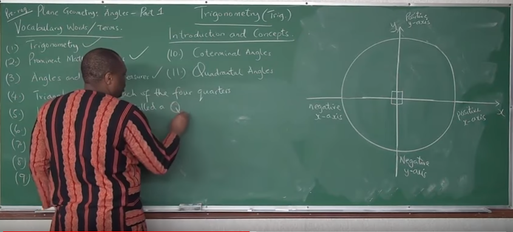
Each of the four quarters is called a Quadrant.
A Quadrant is a quarter of a circle.
The origin ($0, 0$) in a rectangular coordinate is the vertex ($0, 0$) in a
circle
An angle is in standard position if:
(1.) The vertex of end point is the origin, $0, 0$
(2.) The initial side is the positive $x-axis$
The initial side of an angle in standard position is the positive $x-axis$
An angle is formed from the initial side.
A positive angle (an angle that is positive) is the angle formed in a counter-clockwise direction from the initial side (the positive $x-axis$)
A negative angle (an angle that is negative) is the angle formed in a clockwise direction from the initial side (the positive $x-axis$)
The terminal side of an angle in standard position is the side through which the angle was
formed from the initial side. OR
The terminal side of angle in standard position is the side whose intersection with the initial
side forms the angle.
Given the image: 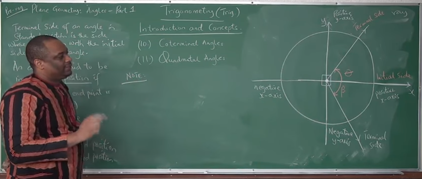
$\theta$ is in standard position
$\beta$ is also in standard position
However
$\theta$ is positive (because it was formed from a counter-clockwise rotation)
$\beta$ is negative (because it was formed from a clockwise rotation)
An angle is in a "specific" quadrant if the terminal side of the angle lies in that
quadrant 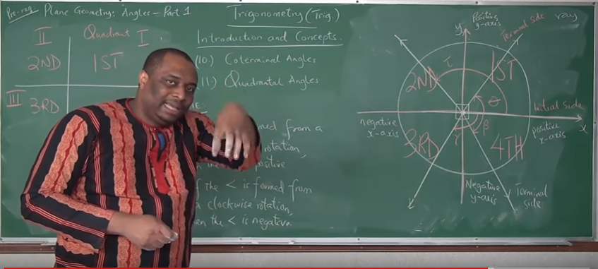
The quadrants are listed as:
$1st$, $2nd$, $3rd$, $4th$ quadrants OR
Quadrants $1$, $2$, $3$, $4$ OR
Quadrants $I$, $II$, $III$, $IV$
But, what if the terminal side lies in the $x-axis$ or $y-axis$?
What quadrant would the angle be?
This takes us to...
A Quadrantal Angle is an angle whose terminal side lies on the $x-axis$ or $y-axis$.
These include: $90^\circ$, $-90^\circ$, $180^\circ$, $-180^\circ$, $270^\circ$, $-270^\circ$,
$360^\circ$, $-360^\circ$
Coterminal angles are angles in standard position that have the same initial side
and
the same terminal side. 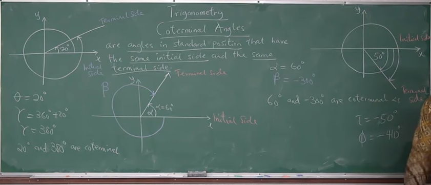 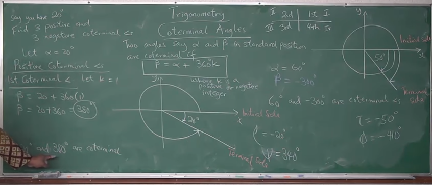
Similar vocabulary meaning of "together, something in common, etc"
Bring it to English Language - co-worker
Bring it to Mathematics - coordinate
Bring it to Actuarial Science (Insurance Companies) - copayment, copay
Because coterminal angles have the same terminal side, coterminal angles are in the
same quadrant
Review the diagram
Example 1: Positive-Positive coterminal angles
$
\theta = 20^\circ \\[3ex]
\gamma = 360 + 20 = 380^\circ \\[3ex]
20^\circ \:\:and\:\: 380^\circ \:\:are\:\: coterminal \\[3ex]
$
Example 2: Positive-Negative coterminal angles
$
\alpha = 60^\circ \\[3ex]
\beta = -300^\circ \\[3ex]
60^\circ \:\:and\:\: -300^\circ \:\:are\:\: coterminal \\[3ex]
$
Example 3: Negative-Negative coterminal angles
$
\tau = -50^\circ \\[3ex]
\phi = -410^\circ \\[3ex]
-50^\circ \:\:and\:\: -410^\circ \:\:are\:\: coterminal \\[3ex]
$
Example 4: Negative-Positive coterminal angles
$
\rho = -20^\circ \\[3ex]
\psi = 340^\circ \\[3ex]
-20^\circ \:\:and\:\: 340^\circ \:\:are\:\: coterminal \\[3ex]
$
Do we have to keep drawing the circle and the coordinate plane in order to get coterminal angles?
What is we were asked to find $7$ positive and $7$ negative coterminal angles of an angle?
If we draw circles in coordinate planes to find them, would that not be a huge mess?
Is there any other way we can find the coterminal angles?
Formula for Finding Coterminal Angles
Two angles say: $\alpha$ and $\beta$ in standard position are coterminal if:
$\beta = \alpha + 360k$
where
$k$ is a positive or negative integer
To find positive coterminal angles, use the positive integer values of $k$
To find negative coterminal angles, use the negative integer values of $k$
Shortened Formula for Finding Coterminal Angles
Two angles say: $\alpha$ and $\beta$ in standard position are coterminal if:
$\beta = \alpha \pm 360k$
where
$k$ is an integer
Notable Notes for Coterminal Angles
(1.) Coterminal angles have the same initial side.
(2.) Coterminal angles have the same terminal side.
(3.) Coterminal angles are in the same quadrant.
(4.) Coterminal angles have the same trigonometric functions/ratios.
$
\sin 20^\circ = \sin 380^\circ \\[3ex]
\cos 60^\circ = \cos (-300^\circ) \\[3ex]
\tan(-50^\circ) = \tan(-410^\circ) \\[3ex]
\csc(-20^\circ) = \csc(340^\circ) \\[3ex]
$
Coterminal angles are very important especially when dealing with negative angles.
A unit circle is a circle of radius, $1$ unit, whose center is the origin.
Special Angles are multiples of $30^\circ$, $45^\circ$, $60^\circ$, and $90^\circ$
We can determine the trigonometric functions of special angles without the use of a calculator.
These angles include: $30^\circ, 60^\circ, 90^\circ, 120^\circ, 150^\circ, 180^\circ, 210^\circ,
240^\circ,
270^\circ, 300^\circ, 330^\circ, 360^\circ, 45^\circ, 135^\circ, 225^\circ, 315^\circ$, etc.
A Reference Angle is the positive acute angle formed between the terminal side of the angle and
the $x-axis$
(both the positive $x-axis$ and the negative $x-axis$).
When we draw an angle in a standard position, the positive acute angle made by the terminal side of that
angle
with reference to the $x -axis$ (both the positive $x-axis$ and the negative $x-axis$ is known as
the reference angle.
There are two methods of calculating reference angles - by "formula" as seen in the Trigonometric
Identities and
"manually" by drawing it in the coordinate plane and determining it.
Notable Notes for Reference Angles 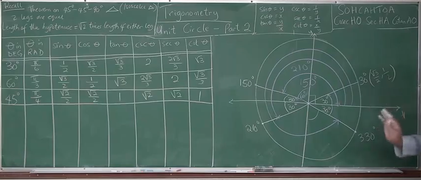
(1.) Quadrantal angles do not have reference angles.
(2.) The reference angles for angles in any of the four quadrants are listed in the "Trigonometric
Identities"
(3.) For any angle greater than $360$, find the coterminal angle that is less than $360$. Then, use the
applicable
reference angle listed in the "Trigonometric Identities". This can be done because coterminal angles
have the same terminal side.
(4.) For any angle less than $0$, find the coterminal angle that is greater than $0$. Then, use the
applicable
reference angle listed in the "Trigonometric Identities". This can be done because coterminal angles
have the same terminal side.
(5.) You can still calculate reference angles "manually" - draw it yourself in the coordinate plane
and determine it.
See the diagram below for the reference angles of $30^\circ$
Manual Method: As seen from the diagram, the reference angles for $30^\circ$ are $150^\circ,
210^\circ$, and $330^\circ$.
But, we have an easier way to calculate reference angles (as seen in the Trigonometric Identities)
Show students the two methods of calculating reference angles.
A trigonometric equation is an equation that has at least a trigonometric function.
Trigonometric Functions
Given any angle, say $\theta$
There are six basic trigonometric functions.
They are:
| Trigonometric Function | Symbol/Short Forms | Formulas |
|---|---|---|
| Sine | $\sin \theta$ | |
| Cosine | $\cos \theta$ | |
| Tangent | $\tan \theta$ | $\tan \theta = \dfrac{\sin \theta}{\cos \theta}$ |
| Cosecant | $\csc \theta$ OR cosec $\theta$ | $\csc \theta = \dfrac{1}{\sin \theta}$ |
| Secant | $\sec \theta$ | $\sec \theta = \dfrac{1}{\cos \theta}$ |
| Cotangent | $\cot \theta$ OR cotan $\theta$ | $\cot \theta = \dfrac{1}{\tan \theta} = \dfrac{\cos \theta}{\sin \theta}$ |
Right Triangle Trigonometry
Recall: 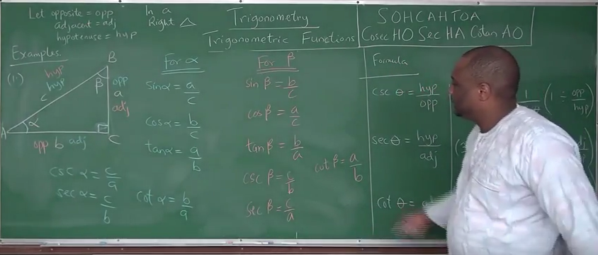
(1.) A triangle has $3$ angles
(2.) A right triangle is a triangle in which one of the angles is a right angle (a $90^\circ$ angle)
Given a right triangle as shown:
Let:
$
hypotenuse = hyp \\[3ex]
adjacent = adj \\[3ex]
opposite = opp \\[3ex]
$
The side length facing the right angle is the hypotenuse of the right triangle
The side length in the same side of a specific angle OR the side length that borders a
specific and the right angle is the adjacent side of that angle in the right triangle.
The side length facing a specific angle OR the side length across from a specific angle is
the opposite side of that angle in the right triangle.
| Formulas for Right Triangle Trigonometric Functions |
|---|
| $\sin \theta = \dfrac{opp}{hyp}$ |
| $\cos \theta = \dfrac{adj}{hyp}$ |
| $$ \tan \theta = \dfrac{\sin \theta}{\cos \theta} \\[5ex] = \sin \theta \div \cos \theta \\[3ex] = \dfrac{opp}{hyp} \div \dfrac{adj}{hyp} \\[5ex] = \dfrac{opp}{hyp} * \dfrac{hyp}{adj} \\[5ex] \therefore \tan \theta = \dfrac{opp}{adj} $$ |
| $$ \csc \theta = \dfrac{1}{\sin \theta} \\[5ex] = 1 \div \sin \theta \\[3ex] = 1 \div \dfrac{opp}{hyp} \\[5ex] \therefore \csc \theta = \dfrac{hyp}{opp} $$ |
| $$ \sec \theta = \dfrac{1}{\cos \theta} \\[5ex] = 1 \div \cos \theta \\[3ex] = 1 \div \dfrac{adj}{hyp} \\[5ex] \therefore \sec \theta = \dfrac{hyp}{adj} $$ |
| $$ \cot \theta = \dfrac{1}{\tan \theta} = \dfrac{\cos \theta}{\sin \theta} \\[5ex] = \cos \theta \div \sin \theta \\[3ex] = \dfrac{adj}{hyp} \div \dfrac{opp}{hyp} \\[5ex] = \dfrac{adj}{hyp} * \dfrac{hyp}{opp} \\[5ex] \therefore \cot \theta = \dfrac{adj}{opp} $$ |
| Relative to $\angle \alpha$ | Relative to $\angle \beta$ |
|---|---|
| $hyp = c$ | $hyp = c$ |
| $adj = b$ | $adj = a$ |
| $opp = a$ | $opp = b$ |
| $\sin \alpha = \dfrac{a}{c}$ | $\sin \beta = \dfrac{b}{c}$ |
| $\cos \alpha = \dfrac{b}{c}$ | $\cos \beta = \dfrac{a}{c}$ |
| $\tan \alpha = \dfrac{a}{b}$ | $\tan \beta = \dfrac{b}{a}$ |
| $\csc \alpha = \dfrac{c}{a}$ | $\csc \beta = \dfrac{c}{b}$ |
| $\sec \alpha = \dfrac{c}{b}$ | $\sec \beta = \dfrac{c}{a}$ |
| $\cot \alpha = \dfrac{b}{a}$ | $\cot \beta = \dfrac{a}{b}$ |
Let us review more examples 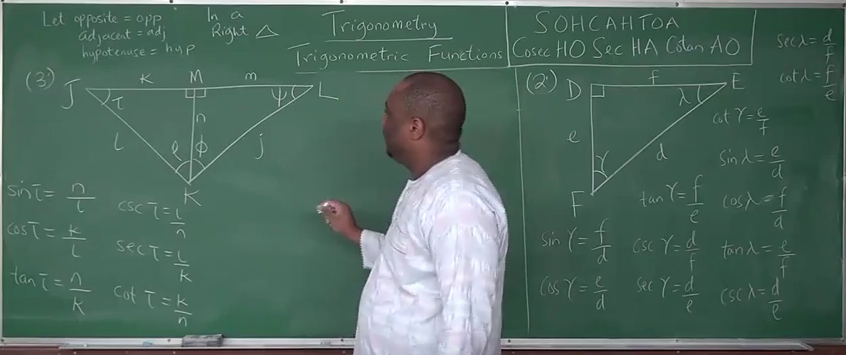
| Relative to $\angle \gamma$ | Relative to $\angle \lambda$ |
|---|---|
| $hyp = d$ | $hyp = d$ |
| $adj = e$ | $adj = f$ |
| $opp = f$ | $opp = e$ |
| $\sin \gamma = \dfrac{f}{d}$ | $\sin \lambda = \dfrac{e}{d}$ |
| $\cos \gamma = \dfrac{e}{d}$ | $\cos \lambda = \dfrac{f}{d}$ |
| $\tan \gamma = \dfrac{f}{e}$ | $\tan \lambda = \dfrac{e}{f}$ |
| $\csc \gamma = \dfrac{d}{f}$ | $\csc \lambda = \dfrac{d}{e}$ |
| $\sec \gamma = \dfrac{d}{e}$ | $\sec \lambda = \dfrac{d}{f}$ |
| $\cot \gamma = \dfrac{e}{f}$ | $\cot \lambda = \dfrac{f}{e}$ |
Students should complete the trigonometric functions for $\tau,\: \rho,\: \phi,\: \psi$
Verify the answers here.
The Unit Circle
Recall:
A unit circle is a circle of radius, $1$ unit, whose center is the origin.
The equation of a circle with center, $(a, b)$ is: $(x - a)^2 + (y - b)^2 = r^2$
If the center is at the origin, $(0, 0)$;
the equation is:
$
(x - 0)^2 + (y - 0)^2 = r^2 \\[3ex]
x^2 + y^2 = r^2 \\[3ex]
$
For our discussion on unit circle, we are focusing on a circle with center, origin; and radius of $1$
unit
Recall:
Special Angles are multiples of $30^\circ$, $45^\circ$, $60^\circ$, and $90^\circ$
One nice feature of special angles is that we can compute their trigonometric functions without the
use of a calculator.
Say we have an angle, $\theta$ drawn in standard position whose terminal side intersects a circle
of radius, $r$ at Point, $P(x, y)$ 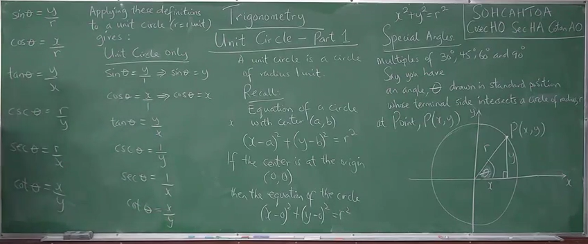
If a right triangle is drawn from the origin of the circle to point, $P$ as shown:
SOHCAHTOA and cosecHOsecHAcotanAO
$
\sin \theta = \dfrac{y}{r} \\[5ex]
\cos \theta = \dfrac{x}{r} \\[5ex]
\tan \theta = \dfrac{y}{x} \\[5ex]
\csc \theta = \dfrac{r}{y} \\[5ex]
\sec \theta = \dfrac{r}{x} \\[5ex]
\cot \theta = \dfrac{x}{y}
$
Apply these definitions to a unit circle.
Remember that in a unit circle, $r = 1$ unit
This implies that:
$
\sin \theta = \dfrac{y}{1} = y \\[5ex]
\cos \theta = \dfrac{x}{1} = x \\[5ex]
\tan \theta = \dfrac{y}{x} \\[5ex]
\csc \theta = \dfrac{1}{y} \\[5ex]
\sec \theta = \dfrac{1}{x} \\[5ex]
\cot \theta = \dfrac{x}{y}
$
Let us begin by finding the trigonometric functions of Quadrantal angles. 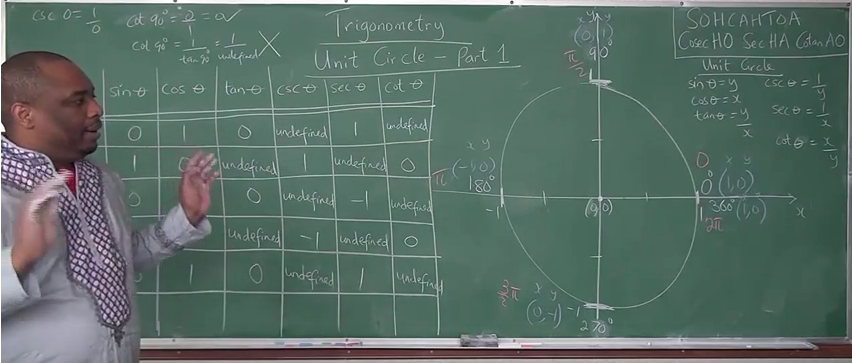
Recall:
The radius of a circle is the distance from the center of the circle to any point in the
circumference of the circle.
As seen in the diagram
NOTE (For Quadrantal Angles): For $\cot \theta$, use original $x$ and $y$, not modified
formula.
Use: $\cot \theta = \dfrac{x}{y} \:\:NOT\:\: \cot \theta = \dfrac{1}{\tan \theta} \\[5ex]$
|
$\angle$ coordinates |
$\theta$ in DEG | $\theta$ in RAD |
$\sin \theta$ $\sin \theta = y$ |
$\cos \theta$ $\cos \theta = x$ |
$\tan \theta$ $\tan \theta = \dfrac{y}{x}$ |
$\csc \theta$ $\csc \theta = \dfrac{1}{y}$ |
$\sec \theta$ $\sec \theta = \dfrac{1}{x}$ |
$\cot \theta$ $\cot \theta = \dfrac{x}{y}$ |
|---|---|---|---|---|---|---|---|---|
|
$0$ $(1, 0)$ $x = 1, y = 0$ |
$0$ | $0$ | $0$ | $1$ | $\dfrac{0}{1} = 0$ | $\dfrac{1}{0} \rightarrow undefined$ | $\dfrac{1}{1} = 1$ | $\dfrac{1}{0} \rightarrow undefined$ |
|
$90$ $(0, 1)$ $x = 0, y = 1$ |
$90$ | $\dfrac{\pi}{2}$ | $1$ | $0$ | $\dfrac{1}{0} \rightarrow undefined$ | $\dfrac{1}{1} = 1$ | $\dfrac{1}{0} \rightarrow undefined$ | $\dfrac{0}{1} = 0$ |
|
$180$ $(-1, 0)$ $x = -1, y = 0$ |
$180$ | $\pi$ | $0$ | $-1$ | $\dfrac{0}{-1} = 0$ | $\dfrac{1}{0} \rightarrow undefined$ | $\dfrac{1}{-1} = -1$ | $\dfrac{-1}{0} \rightarrow undefined$ |
|
$270$ $(0, -1)$ $x = 0, y = -1$ |
$270$ | $\dfrac{3\pi}{2}$ | $-1$ | $0$ | $\dfrac{-1}{0} \rightarrow undefined$ | $\dfrac{1}{-1} = -1$ | $\dfrac{1}{0} \rightarrow undefined$ | $\dfrac{0}{-1} = 0$ |
|
$360$ $(1, 0)$ $x = 1, y = 0$ |
$360$ | $2\pi$ | $0$ | $1$ | $\dfrac{0}{1} = 0$ | $\dfrac{1}{0} \rightarrow undefined$ | $\dfrac{1}{1} = 1$ | $\dfrac{1}{0} \rightarrow undefined$ |
Let us find the trigonometric functions of $30^\circ$ 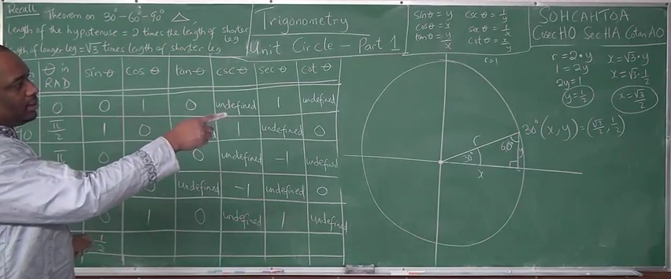
From the diagram shown:
$
Let\:\: hypotenuse = hyp \\[3ex]
short\:\: side = short \\[3ex]
middle\:\: side = middle \\[3ex]
hyp = r = 1 \\[3ex]
short = y \\[3ex]
middle = x \\[3ex]
$
Recall:
(1.) The sum of the angles of a triangle is $180^\circ$
In a $30^\circ - 60^\circ - 90^\circ$ triangle:
(2.) The length of the hypotenuse is twice the length of the short side.
(3.) The length of the middle side is the square root of $3$ times the length of short side.
Based on the theorems:
$
r = 2y \\[3ex]
2y = r \\[3ex]
r = 1 \\[3ex]
2y = 1 \\[3ex]
y = \dfrac{1}{2} \\[5ex]
x = \sqrt{3} * y \\[3ex]
x = \sqrt{3} * \dfrac{1}{2} \\[3ex]
x = \dfrac{\sqrt{3}}{2}
$
| $\angle$/coordinate | $\theta$ in DEG | $\theta$ in RAD |
$\sin \theta$ $\sin \theta = y$ |
$\cos \theta$ $\cos \theta = x$ |
$\tan \theta$ $\tan \theta = \dfrac{y}{x}$ |
$\csc \theta$ $\csc \theta = \dfrac{1}{y}$ |
$\sec \theta$ $\sec \theta = \dfrac{1}{x}$ |
$\cot \theta$ $\cot \theta = \dfrac{x}{y}$ |
|---|---|---|---|---|---|---|---|---|
|
$30$ $\left(\dfrac{\sqrt{3}}{2}, \dfrac{1}{2}\right)$ $x = \dfrac{\sqrt{3}}{2}, y = \dfrac{1}{2}$ |
$30$ | $\dfrac{\pi}{6}$ | $\dfrac{1}{2}$ | $\dfrac{\sqrt{3}}{2}$ |
$\dfrac{1}{2} \div \dfrac{\sqrt{3}}{2}$ $\dfrac{1}{2} * \dfrac{2}{\sqrt{3}}$ $\dfrac{1}{\sqrt{3}}$ $\dfrac{1}{\sqrt{3}} * \dfrac{\sqrt{3}}{\sqrt{3}}$ $\dfrac{\sqrt{3}}{3}$ |
$1 \div \dfrac{1}{2}$ $1 * \dfrac{2}{1}$ $2$ |
$1 \div \dfrac{\sqrt{3}}{2}$ $1 * \dfrac{2}{\sqrt{3}}$ $\dfrac{2}{\sqrt{3}}$ $\dfrac{2}{\sqrt{3}} * \dfrac{\sqrt{3}}{\sqrt{3}}$ $\dfrac{2\sqrt{3}}{3}$ |
$\dfrac{\sqrt{3}}{2} \div \dfrac{1}{2}$ $\dfrac{\sqrt{3}}{2} * \dfrac{2}{1}$ $\sqrt{3}$ |
Let us find the trigonometric functions of $45^\circ$ 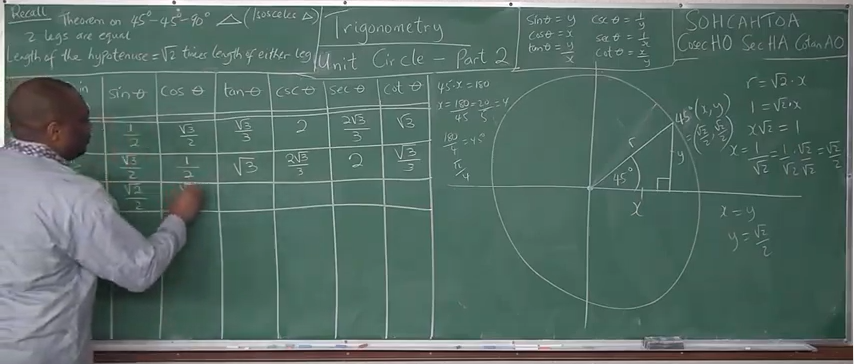
From the diagram shown:
$
Let\:\: hypotenuse = hyp \\[3ex]
short\:\: side = short \\[3ex]
middle\:\: side = middle \\[3ex]
hyp = r = 1 \\[3ex]
short = y \\[3ex]
middle = x \\[3ex]
But\:\: in\:\: a\:\: 45^\circ - 45^\circ - 90^\circ \\[3ex]
short = middle ... isosceles\:\: \triangle \:\:of\:\: 45^\circ \:\:base\:\: \angle \\[3ex]
\therefore x = y \\[3ex]
$
Recall:
(1.) The sum of the angles of a triangle is $180^\circ$
In a $45^\circ - 45^\circ - 90^\circ$ triangle:
(2.) The length of the hypothenuse is the square root of $2$ times the length of either side.
Based on the theorems:
$
r = \sqrt{2} * y \\[3ex]
r = \sqrt{2} * x \\[3ex]
x = y \\[3ex]
\sqrt{2} * y = r \\[3ex]
r = 1 \\[3ex]
\sqrt{2} * y = 1 \\[3ex]
y = \dfrac{1}{\sqrt{2}} = \dfrac{1}{\sqrt{2}} * \dfrac{\sqrt{2}}{\sqrt{2}} \\[5ex]
y = \dfrac{1 * \sqrt{2}}{\sqrt{2} * \sqrt{2}} \\[5ex]
y = \dfrac{\sqrt{2}}{2} \\[5ex]
x = y = \dfrac{\sqrt{2}}{2}
$
| $\angle$/coordinate | $\theta$ in DEG | $\theta$ in RAD |
$\sin \theta$ $\sin \theta = y$ |
$\cos \theta$ $\cos \theta = x$ |
$\tan \theta$ $\tan \theta = \dfrac{y}{x}$ |
$\csc \theta$ $\csc \theta = \dfrac{1}{y}$ |
$\sec \theta$ $\sec \theta = \dfrac{1}{x}$ |
$\cot \theta$ $\cot \theta = \dfrac{x}{y}$ |
|---|---|---|---|---|---|---|---|---|
|
$45$ $\left(\dfrac{\sqrt{2}}{2}, \dfrac{\sqrt{2}}{2}\right)$ $x = \dfrac{\sqrt{2}}{2}, y = \dfrac{\sqrt{2}}{2}$ |
$45$ | $\dfrac{\pi}{4}$ | $\dfrac{\sqrt{2}}{2}$ | $\dfrac{\sqrt{2}}{2}$ |
$\dfrac{\sqrt{2}}{2} \div \dfrac{\sqrt{2}}{2}$ $1$ |
$1 \div \dfrac{\sqrt{2}}{2}$ $1 * \dfrac{2}{\sqrt{2}}$ $\dfrac{2}{\sqrt{2}} * \dfrac{\sqrt{2}}{\sqrt{2}}$ $\dfrac{2 * \sqrt{2}}{\sqrt{2} * \sqrt{2}}$ $\dfrac{2 * \sqrt{2}}{2}$ $\sqrt{2}$ |
$1 \div \dfrac{1}{\sqrt{2}}$ $1 * \dfrac{\sqrt{2}}{1}$ $\sqrt{2}$ |
$\dfrac{\sqrt{2}}{2} \div \dfrac{\sqrt{2}}{2}$ $1$ |
Let us find the trigonometric functions of $60^\circ$ 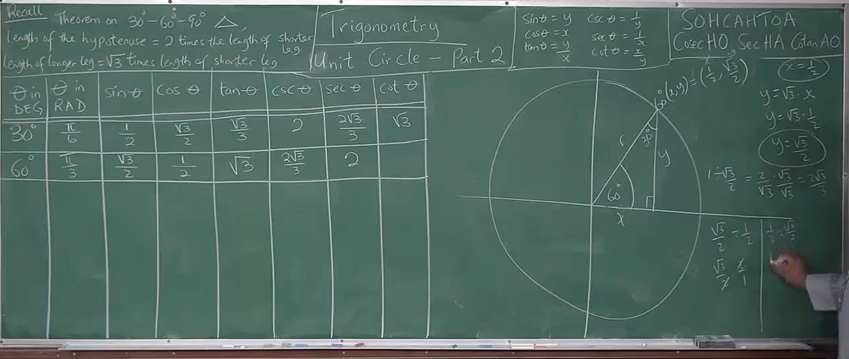
From the diagram shown:
$
Let\:\: hypotenuse = hyp \\[3ex]
short\:\: side = short \\[3ex]
middle\:\: side = middle \\[3ex]
hyp = r = 1 \\[3ex]
short = y \\[3ex]
middle = x \\[3ex]
$
Recall:
(1.) The sum of the angles of a triangle is $180^\circ$
In a $30^\circ - 60^\circ - 90^\circ$ triangle:
(2.) The length of the hypotenuse is twice the length of the short side.
(3.) The length of the middle side is the square root of $3$ times the length of short side.
Based on the theorems:
$
r = 2x \\[3ex]
2x = r \\[3ex]
r = 1 \\[3ex]
2x = 1 \\[3ex]
x = \dfrac{1}{2} \\[5ex]
y = \sqrt{3} * x \\[3ex]
y = \sqrt{3} * \dfrac{1}{2} \\[3ex]
y = \dfrac{\sqrt{3}}{2}
$
| $\angle$/coordinate | $\theta$ in DEG | $\theta$ in RAD |
$\sin \theta$ $\sin \theta = y$ |
$\cos \theta$ $\cos \theta = x$ |
$\tan \theta$ $\tan \theta = \dfrac{y}{x}$ |
$\csc \theta$ $\csc \theta = \dfrac{1}{y}$ |
$\sec \theta$ $\sec \theta = \dfrac{1}{x}$ |
$\cot \theta$ $\cot \theta = \dfrac{x}{y}$ |
|---|---|---|---|---|---|---|---|---|
|
$60$ $\left(\dfrac{1}{2}, \dfrac{\sqrt{3}}{2}\right)$ $x = \dfrac{1}{2}, y = \dfrac{\sqrt{3}}{2}$ |
$60$ | $\dfrac{\pi}{3}$ | $\dfrac{\sqrt{3}}{2}$ | $\dfrac{1}{2}$ |
$\dfrac{\sqrt{3}}{2} \div \dfrac{1}{2}$ $\dfrac{\sqrt{3}}{2} * \dfrac{2}{1}$ $\sqrt{3}$ |
$1 \div \dfrac{\sqrt{3}}{2}$ $1 * \dfrac{2}{\sqrt{3}}$ $\dfrac{2}{\sqrt{3}}$ $\dfrac{2}{\sqrt{3}} * \dfrac{\sqrt{3}}{\sqrt{3}}$ $\dfrac{2\sqrt{3}}{3}$ |
$1 \div \dfrac{1}{2}$ $1 * \dfrac{2}{1}$ $2$ |
$\dfrac{1}{2} \div \dfrac{\sqrt{3}}{2}$ $\dfrac{1}{2} * \dfrac{2}{\sqrt{3}}$ $\dfrac{1}{\sqrt{3}}$ $\dfrac{1}{\sqrt{3}} * \dfrac{\sqrt{3}}{\sqrt{3}}$ $\dfrac{\sqrt{3}}{3}$ |
Guess what?
We have done the main work.
The rest of the special angles can be found using reference angles.
Let us begin with the reference angles of $30^\circ$
We are going to use the manual method here (as seen from the diagrams).
However, you can use the formula method (as seen in the Trigonometric Identities)
Recall: 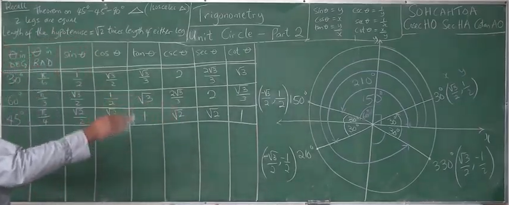
(1.) A Reference Angle is the positive acute angle formed between the terminal side of the angle
and the $x-axis$
(both the positive $x-axis$ and the negative $x-axis$).
(2.) In the coordinate plane (two-dimensional plane):
First Quadrant: $x$ is positive, $y$ is positive
Second Quadrant: $x$ is negative, $y$ is positive
Third Quadrant: $x$ is negative, $y$ is negative
Fourth Quadrant: $x$ is positive, $y$ is negative
See the diagram below for the reference angles of $30^\circ$
As seen from the diagram, the reference angles for $30^\circ$ are $150^\circ, 210^\circ$, and
$330^\circ$.
The coordinates for the reference angles of $30^\circ$ are:
$
30^\circ\left(\dfrac{\sqrt{3}}{2}, \dfrac{1}{2}\right) \\[5ex]
150^\circ\left(-\dfrac{\sqrt{3}}{2}, \dfrac{1}{2}\right) \\[5ex]
210^\circ\left(-\dfrac{\sqrt{3}}{2}, -\dfrac{1}{2}\right) \\[5ex]
330^\circ\left(\dfrac{\sqrt{3}}{2}, -\dfrac{1}{2}\right)
$
| $\angle$/coordinate | $\theta$ in DEG | $\theta$ in RAD |
$\sin \theta$ $\sin \theta = y$ |
$\cos \theta$ $\cos \theta = x$ |
$\tan \theta$ $\tan \theta = \dfrac{y}{x}$ |
$\csc \theta$ $\csc \theta = \dfrac{1}{y}$ |
$\sec \theta$ $\sec \theta = \dfrac{1}{x}$ |
$\cot \theta$ $\cot \theta = \dfrac{x}{y}$ |
|---|---|---|---|---|---|---|---|---|
|
$150$ $\left(-\dfrac{\sqrt{3}}{2}, \dfrac{1}{2}\right)$ $x = -\dfrac{\sqrt{3}}{2}, y = \dfrac{1}{2}$ |
$150$ | $\dfrac{5\pi}{6}$ | $\dfrac{1}{2}$ | $-\dfrac{\sqrt{3}}{2}$ |
$\dfrac{1}{2} \div -\dfrac{\sqrt{3}}{2}$ $\dfrac{1}{2} * -\dfrac{2}{\sqrt{3}}$ $-\dfrac{1}{\sqrt{3}}$ $-\dfrac{1}{\sqrt{3}} * \dfrac{\sqrt{3}}{\sqrt{3}}$ $-\dfrac{\sqrt{3}}{3}$ |
$1 \div \dfrac{1}{2}$ $1 * \dfrac{2}{1}$ $2$ |
$1 \div -\dfrac{\sqrt{3}}{2}$ $1 * -\dfrac{2}{\sqrt{3}}$ $-\dfrac{2}{\sqrt{3}}$ $-\dfrac{2}{\sqrt{3}} * \dfrac{\sqrt{3}}{\sqrt{3}}$ $-\dfrac{2\sqrt{3}}{3}$ |
$-\dfrac{\sqrt{3}}{2} \div \dfrac{1}{2}$ $-\dfrac{\sqrt{3}}{2} * \dfrac{2}{1}$ $-\sqrt{3}$ |
|
$210$ $\left(-\dfrac{\sqrt{3}}{2}, -\dfrac{1}{2}\right)$ $x = -\dfrac{\sqrt{3}}{2}, y = -\dfrac{1}{2}$ |
$210$ | $\dfrac{7\pi}{6}$ | $-\dfrac{1}{2}$ | $-\dfrac{\sqrt{3}}{2}$ |
$-\dfrac{1}{2} \div -\dfrac{\sqrt{3}}{2}$ $-\dfrac{1}{2} * -\dfrac{2}{\sqrt{3}}$ $\dfrac{1}{\sqrt{3}}$ $\dfrac{1}{\sqrt{3}} * \dfrac{\sqrt{3}}{\sqrt{3}}$ $\dfrac{\sqrt{3}}{3}$ |
$1 \div -\dfrac{1}{2}$ $1 * -\dfrac{2}{1}$ $-2$ |
$1 \div -\dfrac{\sqrt{3}}{2}$ $1 * -\dfrac{2}{\sqrt{3}}$ $-\dfrac{2}{\sqrt{3}}$ $-\dfrac{2}{\sqrt{3}} * \dfrac{\sqrt{3}}{\sqrt{3}}$ $-\dfrac{2\sqrt{3}}{3}$ |
$-\dfrac{\sqrt{3}}{2} \div -\dfrac{1}{2}$ $-\dfrac{\sqrt{3}}{2} * -\dfrac{2}{1}$ $\sqrt{3}$ |
|
$330$ $\left(\dfrac{\sqrt{3}}{2}, -\dfrac{1}{2}\right)$ $x = \dfrac{\sqrt{3}}{2}, y = -\dfrac{1}{2}$ |
$330$ | $\dfrac{11\pi}{6}$ | $-\dfrac{1}{2}$ | $\dfrac{\sqrt{3}}{2}$ |
$-\dfrac{1}{2} \div \dfrac{\sqrt{3}}{2}$ $-\dfrac{1}{2} * \dfrac{2}{\sqrt{3}}$ $-\dfrac{1}{\sqrt{3}}$ $-\dfrac{1}{\sqrt{3}} * \dfrac{\sqrt{3}}{\sqrt{3}}$ $-\dfrac{\sqrt{3}}{3}$ |
$1 \div -\dfrac{1}{2}$ $1 * -\dfrac{2}{1}$ $-2$ |
$1 \div \dfrac{\sqrt{3}}{2}$ $1 * \dfrac{2}{\sqrt{3}}$ $\dfrac{2}{\sqrt{3}}$ $\dfrac{2}{\sqrt{3}} * \dfrac{\sqrt{3}}{\sqrt{3}}$ $\dfrac{2\sqrt{3}}{3}$ |
$\dfrac{\sqrt{3}}{2} \div -\dfrac{1}{2}$ $\dfrac{\sqrt{3}}{2} * -\dfrac{2}{1}$ $-\sqrt{3}$ |
Let us find the reference angles of $45^\circ$
We are going to use the manual method here (as seen from the diagrams).
However, you can use the formula method (as seen in the Trigonometric Identities)
Recall: 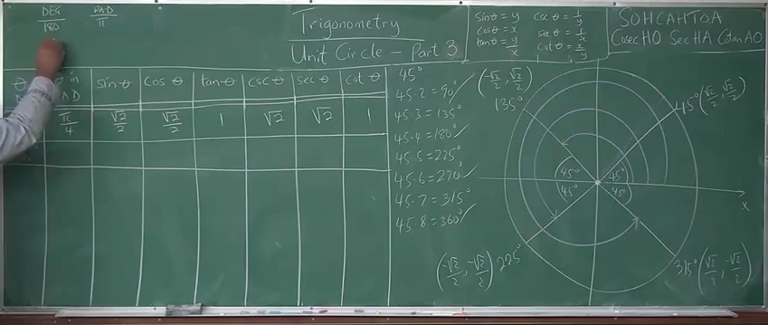
(1.) A Reference Angle is the positive acute angle formed between the terminal side of the angle
and the $x-axis$
(both the positive $x-axis$ and the negative $x-axis$).
(2.) In the coordinate plane (two-dimensional plane):
First Quadrant: $x$ is positive, $y$ is positive
Second Quadrant: $x$ is negative, $y$ is positive
Third Quadrant: $x$ is negative, $y$ is negative
Fourth Quadrant: $x$ is positive, $y$ is negative
See the diagram below for the reference angles of $30^\circ$
As seen from the diagram, the reference angles for $45^\circ$ are $135^\circ, 225^\circ$, and
$315^\circ$.
The coordinates for the reference angles of $45^\circ$ are:
$
45^\circ\left(\dfrac{\sqrt{2}}{2}, \dfrac{\sqrt{2}}{2}\right) \\[5ex]
135^\circ\left(-\dfrac{\sqrt{2}}{2}, \dfrac{\sqrt{2}}{2}\right) \\[5ex]
225^\circ\left(-\dfrac{\sqrt{2}}{2}, -\dfrac{\sqrt{2}}{2}\right) \\[5ex]
315^\circ\left(\dfrac{\sqrt{2}}{2}, -\dfrac{\sqrt{2}}{2}\right)
$
| $\angle$/coordinate | $\theta$ in DEG | $\theta$ in RAD |
$\sin \theta$ $\sin \theta = y$ |
$\cos \theta$ $\cos \theta = x$ |
$\tan \theta$ $\tan \theta = \dfrac{y}{x}$ |
$\csc \theta$ $\csc \theta = \dfrac{1}{y}$ |
$\sec \theta$ $\sec \theta = \dfrac{1}{x}$ |
$\cot \theta$ $\cot \theta = \dfrac{x}{y}$ |
|---|---|---|---|---|---|---|---|---|
|
$135$ $\left(-\dfrac{\sqrt{2}}{2}, \dfrac{\sqrt{2}}{2}\right)$ $x = -\dfrac{\sqrt{2}}{2}, y = \dfrac{\sqrt{2}}{2}$ |
$135$ | $\dfrac{3\pi}{4}$ | $\dfrac{\sqrt{2}}{2}$ | $-\dfrac{\sqrt{2}}{2}$ |
$\dfrac{\sqrt{2}}{2} \div -\dfrac{\sqrt{2}}{2}$ $-1$ |
$1 \div \dfrac{\sqrt{2}}{2}$ $1 * \dfrac{2}{\sqrt{2}}$ $\dfrac{2}{\sqrt{2}} * \dfrac{\sqrt{2}}{\sqrt{2}}$ $\dfrac{2 * \sqrt{2}}{\sqrt{2} * \sqrt{2}}$ $\dfrac{2 * \sqrt{2}}{2}$ $\sqrt{2}$ |
$1 \div -\dfrac{1}{\sqrt{2}}$ $1 * -\dfrac{\sqrt{2}}{1}$ $-\sqrt{2}$ |
$-\dfrac{\sqrt{2}}{2} \div \dfrac{\sqrt{2}}{2}$ $-1$ |
|
$225$ $\left(-\dfrac{\sqrt{2}}{2}, -\dfrac{\sqrt{2}}{2}\right)$ $x = -\dfrac{\sqrt{2}}{2}, y = -\dfrac{\sqrt{2}}{2}$ |
$225$ | $\dfrac{5\pi}{4}$ | $-\dfrac{\sqrt{2}}{2}$ | $-\dfrac{\sqrt{2}}{2}$ |
$-\dfrac{\sqrt{2}}{2} \div -\dfrac{\sqrt{2}}{2}$ $1$ |
$1 -\div \dfrac{\sqrt{2}}{2}$ $1 * -\dfrac{2}{\sqrt{2}}$ $-\dfrac{2}{\sqrt{2}} * \dfrac{\sqrt{2}}{\sqrt{2}}$ $-\dfrac{2 * \sqrt{2}}{\sqrt{2} * \sqrt{2}}$ $-\dfrac{2 * \sqrt{2}}{2}$ $-\sqrt{2}$ |
$1 \div -\dfrac{1}{\sqrt{2}}$ $1 * -\dfrac{\sqrt{2}}{1}$ $-\sqrt{2}$ |
$-\dfrac{\sqrt{2}}{2} \div -\dfrac{\sqrt{2}}{2}$ $1$ |
|
$315$ $\left(\dfrac{\sqrt{2}}{2}, -\dfrac{\sqrt{2}}{2}\right)$ $x = \dfrac{\sqrt{2}}{2}, y = -\dfrac{\sqrt{2}}{2}$ |
$315$ | $\dfrac{7\pi}{4}$ | $-\dfrac{\sqrt{2}}{2}$ | $\dfrac{\sqrt{2}}{2}$ |
$-\dfrac{\sqrt{2}}{2} \div \dfrac{\sqrt{2}}{2}$ $-1$ |
$1 \div -\dfrac{\sqrt{2}}{2}$ $1 * -\dfrac{2}{\sqrt{2}}$ $-\dfrac{2}{\sqrt{2}} * \dfrac{\sqrt{2}}{\sqrt{2}}$ $-\dfrac{2 * \sqrt{2}}{\sqrt{2} * \sqrt{2}}$ $-\dfrac{2 * \sqrt{2}}{2}$ $-\sqrt{2}$ |
$1 \div \dfrac{1}{\sqrt{2}}$ $1 * \dfrac{\sqrt{2}}{1}$ $\sqrt{2}$ |
$\dfrac{\sqrt{2}}{2} \div -\dfrac{\sqrt{2}}{2}$ $-1$ |
Let us find the reference angles of $60^\circ$
We are going to use the manual method here (as seen from the diagrams).
However, you can use the formula method (as seen in the Trigonometric Identities)
Recall: 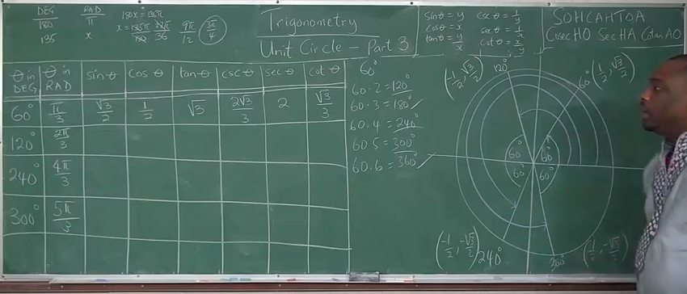
(1.) A Reference Angle is the positive acute angle formed between the terminal side of the angle
and the $x-axis$
(both the positive $x-axis$ and the negative $x-axis$).
(2.) In the coordinate plane (two-dimensional plane):
First Quadrant: $x$ is positive, $y$ is positive
Second Quadrant: $x$ is negative, $y$ is positive
Third Quadrant: $x$ is negative, $y$ is negative
Fourth Quadrant: $x$ is positive, $y$ is negative
See the diagram below for the reference angles of $60^\circ$
As seen from the diagram, the reference angles for $60^\circ$ are $120^\circ, 240^\circ$, and
$300^\circ$.
The coordinates for the reference angles of $45^\circ$ are:
$
60^\circ\left(\dfrac{1}{2}, \dfrac{\sqrt{3}}{2}\right) \\[5ex]
120^\circ\left(-\dfrac{1}{2}, \dfrac{\sqrt{3}}{2}\right) \\[5ex]
240^\circ\left(\dfrac{1}{2}, \dfrac{\sqrt{3}}{2}\right) \\[5ex]
300^\circ\left(\dfrac{1}{2}, \dfrac{\sqrt{3}}{2}\right)
$
| $\angle$/coordinate | $\theta$ in DEG | $\theta$ in RAD |
$\sin \theta$ $\sin \theta = y$ |
$\cos \theta$ $\cos \theta = x$ |
$\tan \theta$ $\tan \theta = \dfrac{y}{x}$ |
$\csc \theta$ $\csc \theta = \dfrac{1}{y}$ |
$\sec \theta$ $\sec \theta = \dfrac{1}{x}$ |
$\cot \theta$ $\cot \theta = \dfrac{x}{y}$ |
|---|---|---|---|---|---|---|---|---|
|
$120$ $\left(-\dfrac{1}{2}, \dfrac{\sqrt{3}}{2}\right)$ $x = -\dfrac{1}{2}, y = \dfrac{\sqrt{3}}{2}$ |
$120$ | $\dfrac{2\pi}{3}$ | $\dfrac{\sqrt{3}}{2}$ | $-\dfrac{1}{2}$ |
$\dfrac{\sqrt{3}}{2} \div -\dfrac{1}{2}$ $\dfrac{\sqrt{3}}{2} * -\dfrac{2}{1}$ $-\sqrt{3}$ |
$1 \div \dfrac{\sqrt{3}}{2}$ $1 * \dfrac{2}{\sqrt{3}}$ $\dfrac{2}{\sqrt{3}}$ $\dfrac{2}{\sqrt{3}} * \dfrac{\sqrt{3}}{\sqrt{3}}$ $\dfrac{2\sqrt{3}}{3}$ |
$1 \div -\dfrac{1}{2}$ $1 * -\dfrac{2}{1}$ $-2$ |
$-\dfrac{1}{2} \div \dfrac{\sqrt{3}}{2}$ $-\dfrac{1}{2} * \dfrac{2}{\sqrt{3}}$ $-\dfrac{1}{\sqrt{3}}$ $-\dfrac{1}{\sqrt{3}} * \dfrac{\sqrt{3}}{\sqrt{3}}$ $-\dfrac{\sqrt{3}}{3}$ |
|
$240$ $\left(-\dfrac{1}{2}, -\dfrac{\sqrt{3}}{2}\right)$ $x = -\dfrac{1}{2}, y = -\dfrac{\sqrt{3}}{2}$ |
$240$ | $\dfrac{4\pi}{3}$ | $-\dfrac{\sqrt{3}}{2}$ | $-\dfrac{1}{2}$ |
$-\dfrac{\sqrt{3}}{2} \div -\dfrac{1}{2}$ $-\dfrac{\sqrt{3}}{2} * -\dfrac{2}{1}$ $\sqrt{3}$ |
$1 \div -\dfrac{\sqrt{3}}{2}$ $1 * -\dfrac{2}{\sqrt{3}}$ $-\dfrac{2}{\sqrt{3}}$ $-\dfrac{2}{\sqrt{3}} * \dfrac{\sqrt{3}}{\sqrt{3}}$ $-\dfrac{2\sqrt{3}}{3}$ |
$1 \div -\dfrac{1}{2}$ $1 * -\dfrac{2}{1}$ $-2$ |
$-\dfrac{1}{2} \div -\dfrac{\sqrt{3}}{2}$ $-\dfrac{1}{2} * -\dfrac{2}{\sqrt{3}}$ $\dfrac{1}{\sqrt{3}}$ $\dfrac{1}{\sqrt{3}} * \dfrac{\sqrt{3}}{\sqrt{3}}$ $\dfrac{\sqrt{3}}{3}$ |
|
$300$ $\left(\dfrac{1}{2}, -\dfrac{\sqrt{3}}{2}\right)$ $x = \dfrac{1}{2}, y = -\dfrac{\sqrt{3}}{2}$ |
$300$ | $\dfrac{5\pi}{3}$ | $-\dfrac{\sqrt{3}}{2}$ | $\dfrac{1}{2}$ |
$-\dfrac{\sqrt{3}}{2} \div \dfrac{1}{2}$ $-\dfrac{\sqrt{3}}{2} * \dfrac{2}{1}$ $-\sqrt{3}$ |
$1 \div -\dfrac{\sqrt{3}}{2}$ $1 * -\dfrac{2}{\sqrt{3}}$ $-\dfrac{2}{\sqrt{3}}$ $-\dfrac{2}{\sqrt{3}} * \dfrac{\sqrt{3}}{\sqrt{3}}$ $-\dfrac{2\sqrt{3}}{3}$ |
$1 \div \dfrac{1}{2}$ $1 * \dfrac{2}{1}$ $2$ |
$\dfrac{1}{2} \div -\dfrac{\sqrt{3}}{2}$ $\dfrac{1}{2} * -\dfrac{2}{\sqrt{3}}$ $-\dfrac{1}{\sqrt{3}}$ $-\dfrac{1}{\sqrt{3}} * \dfrac{\sqrt{3}}{\sqrt{3}}$ $-\dfrac{\sqrt{3}}{3}$ |
NOTE: At the minimum, you should memorize the $\sin$, $\cos$, and $\tan$ values of
$30^\circ$, $45^\circ$, and $60^\circ$.
The other trigonometric ratios and the trigonometric ratios of the rest of the angles can be found
quickly.
Summary
| $\theta$ in DEG | $\theta$ in RAD | $\sin \theta$ | $\cos \theta$ | $\tan \theta$ | $\csc \theta$ | $\sec \theta$ | $\cot \theta$ |
|---|---|---|---|---|---|---|---|
| $0$ | $0$ | $0$ | $1$ | $0$ | $undefined$ | $1$ | $undefined$ |
| $30$ | $\dfrac{\pi}{6}$ | $\dfrac{1}{2}$ | $\dfrac{\sqrt{3}}{2}$ | $\dfrac{\sqrt{3}}{3}$ | $2$ | $\dfrac{2\sqrt{3}}{3}$ | $\sqrt{3}$ |
| $45$ | $\dfrac{\pi}{4}$ | $\dfrac{\sqrt{2}}{2}$ | $\dfrac{\sqrt{2}}{2}$ | $1$ | $\sqrt{2}$ | $\sqrt{2}$ | $1$ |
| $60$ | $\dfrac{\pi}{3}$ | $\dfrac{\sqrt{3}}{2}$ | $\dfrac{1}{2}$ | $\sqrt{3}$ | $\dfrac{2\sqrt{3}}{3}$ | $2$ | $\dfrac{\sqrt{3}}{3}$ |
| $90$ | $\dfrac{\pi}{2}$ | $1$ | $0$ | $undefined$ | $1$ | $undefined$ | $0$ |
| $120$ | $\dfrac{2\pi}{3}$ | $\dfrac{\sqrt{3}}{2}$ | $-\dfrac{1}{2}$ | $-\sqrt{3}$ | $\dfrac{2\sqrt{3}}{3}$ | $-2$ | $-\dfrac{\sqrt{3}}{3}$ |
| $135$ | $\dfrac{3\pi}{4}$ | $\dfrac{\sqrt{2}}{2}$ | $-\dfrac{\sqrt{2}}{2}$ | $-1$ | $\sqrt{2}$ | $-\sqrt{2}$ | $-1$ |
| $150$ | $\dfrac{5\pi}{6}$ | $\dfrac{1}{2}$ | $-\dfrac{\sqrt{3}}{2}$ | $-\dfrac{\sqrt{3}}{3}$ | $2$ | $-\dfrac{2\sqrt{3}}{3}$ | $-\sqrt{3}$ |
| $180$ | $\pi$ | $0$ | $-1$ | $0$ | $undefined$ | $-1$ | $undefined$ |
| $210$ | $\dfrac{7\pi}{6}$ | $-\dfrac{1}{2}$ | $-\dfrac{\sqrt{3}}{2}$ | $\dfrac{\sqrt{3}}{3}$ | $-2$ | $-\dfrac{2\sqrt{3}}{3}$ | $\sqrt{3}$ |
| $225$ | $\dfrac{5\pi}{4}$ | $-\dfrac{\sqrt{2}}{2}$ | $-\dfrac{\sqrt{2}}{2}$ | $1$ | $-\sqrt{2}$ | $-\sqrt{2}$ | $1$ |
| $240$ | $\dfrac{4\pi}{3}$ | $-\dfrac{\sqrt{3}}{2}$ | $-\dfrac{1}{2}$ | $\sqrt{3}$ | $-\dfrac{2\sqrt{3}}{3}$ | $-2$ | $\dfrac{\sqrt{3}}{3}$ |
| $270$ | $\dfrac{3\pi}{2}$ | $-1$ | $0$ | $undefined$ | $-1$ | $undefined$ | $0$ |
| $315$ | $\dfrac{7\pi}{4}$ | $-\dfrac{\sqrt{2}}{2}$ | $\dfrac{\sqrt{2}}{2}$ | $-1$ | $-\sqrt{2}$ | $\sqrt{2}$ | $-1$ |
| $300$ | $\dfrac{5\pi}{3}$ | $-\dfrac{\sqrt{3}}{2}$ | $\dfrac{1}{2}$ | $-\sqrt{3}$ | $-\dfrac{2\sqrt{3}}{3}$ | $2$ | $-\dfrac{\sqrt{3}}{3}$ |
| $330$ | $\dfrac{11\pi}{6}$ | $-\dfrac{1}{2}$ | $\dfrac{\sqrt{3}}{2}$ | $-\dfrac{\sqrt{3}}{3}$ | $-2$ | $\dfrac{2\sqrt{3}}{3}$ | $-\sqrt{3}$ |
| $360$ | $2\pi$ | $0$ | $1$ | $0$ | $undefined$ | $1$ | $undefined$ |
Trigonometric Identities
$$
\begin{array}{c | c}
II & I \\
\hline
III & IV
\end{array} =
\begin{array}{c | c}
S & A \\
\hline
T & C
\end{array} =
\begin{array}{c | c}
Sine\:\: is\:\: positive & All\:\: are\:\: positive \\
\hline
Tangent\:\: is\:\: positive & Cosine\:\: is\:\: positive
\end{array}
$$
The pneumonic to remember it:
First Quadrant to Fourth Quadrant (clockwise direction): A-C-T-S (ACTS of the Apostles)
First Quadrant to Fourth Quadrant (counter-clockwise direction): A-S-T-C: ADD - SUGAR - TO - COFFEE
Fourth Quadrant to Third Quadrant (counter-clockwise direction): C-A-S-T (Simon Peter, CAST your net
into the sea.)
Second Quadrant to Third Quadrant (clockwise direction): S-A-C-T
Cofunction Identities (Identities of Complements)
First Quadrant Identities
First Quadrant: All (sine, cosine, tangent) are positive
This implies that cosecant, secant, and cotangent are also positive.
Given: two angles say: $\alpha$ and $\beta$;
If $\alpha$ and $\beta$ are complementary, then the:
Sine function and the Cosine functions are cofunctions
$
\sin \alpha = \cos \beta \\[3ex]
\cos \alpha = \sin \beta \\[3ex]
$
Tangent function and the Cotangent functions are cofunctions
$
\tan \alpha = \cot \beta \\[3ex]
\cot \alpha = \tan \beta \\[3ex]
$
Secant function and the Cosecant functions are cofunctions
$
\sec \alpha = \csc \beta \\[3ex]
\csc \alpha = \sec \beta \\[3ex]
$
Given: one angle say: $\theta$;
First Quadrant Identities or Cofunction Identities or Identities of Complements
$0 \lt \theta \lt 90 ...Angle\:\: in\:\: Degrees \\[3ex]$
Reference Angle = $\theta$ ... Angle in Degrees
$0 \lt \theta \lt \dfrac{\pi}{2} ...Angle\:\: in\:\: Radians \\[5ex]$
Reference Angle = $\theta$ ... Angle in Radians
First Quadrant: sine, cosine, tangent are positive
This implies that cosecant, secant, and cotangent are also positive
Complement of $\theta$ = $90 - \theta$ where $\theta$ is in degrees:
Complement of $\theta$ = $\dfrac{\pi}{2} - \theta$ where $\theta$ is in radians:
$
(1.)\:\: \sin \theta = \cos (90 - \theta) \\[3ex]
(2.)\:\: \sin \theta = \cos \left(\dfrac{\pi}{2} - \theta \right) \\[5ex]
(3.)\:\: \cos \theta = \sin (90 - \theta) \\[3ex]
(4.)\:\: \cos \theta = \sin \left(\dfrac{\pi}{2} - \theta \right) \\[5ex]
(5.)\:\: \tan \theta = \cot (90 - \theta) \\[3ex]
(6.)\:\: \tan \theta = \cot \left(\dfrac{\pi}{2} - \theta \right) \\[5ex]
(7.)\:\: \cot \theta = \tan (90 - \theta) \\[3ex]
(8.)\:\: \cot \theta = \tan \left(\dfrac{\pi}{2} - \theta \right) \\[5ex]
(9.)\:\: \sec \theta = \csc (90 - \theta) \\[3ex]
(10.)\:\: \sec \theta = \csc \left(\dfrac{\pi}{2} - \theta \right) \\[5ex]
(11.)\:\: \csc \theta = \sec (90 - \theta) \\[3ex]
(12.)\:\: \csc \theta = \sec \left(\dfrac{\pi}{2} - \theta \right) \\[7ex]
$
$90 \lt \theta \lt 180$ ... Angle in Degrees
Reference Angle = $180 - \theta$ ... Angle in Degrees
$\dfrac{\pi}{2} \lt \theta \lt \pi$ ... Angle in Radians
Reference Angle = $\pi - \theta$ ... Angle in Radians
Second Quadrant: sine is positive
This implies that cosecant is also positive
Symmetric across the y-axis
Given: one angle say: $\theta$;
Supplement of $\theta$ = $180 - \theta$ where $\theta$ is in degrees:
Supplement of $\theta$ = $\pi - \theta$ where $\theta$ is in radians:
$ (1.)\;\; \sin \theta = \sin (180 - \theta) \\[3ex] (2.)\;\; \sin (180 - \theta) = \sin \theta \\[3ex] (3.)\;\; \sin \theta = \sin (\pi - \theta) \\[3ex] (4.)\;\; \sin (\pi - \theta) = \sin \theta \\[3ex] (5.)\;\; \cos \theta = -\cos (180 - \theta) \\[3ex] (6.)\;\; \cos (180 - \theta) = -\cos \theta \\[3ex] (7.)\;\; \cos \theta = -\cos (\pi - \theta) \\[3ex] (8.)\;\; \cos (\pi - \theta) = -\cos \theta \\[3ex] (9.)\;\; \tan \theta = -\tan (180 - \theta) \\[3ex] (10.)\;\; \tan (180 - \theta) = -\tan \theta \\[3ex] (11.)\;\; \tan \theta = -\tan (\pi - \theta) \\[3ex] (12.)\;\; \tan (\pi - \theta) = -\tan \theta \\[5ex] $ Example:
ACT The expression $(180 - x)$ is the degree measure of a nonzero acute angle if and only if:
$ A.\;\; 0 \lt x \lt 45 \\[3ex] B.\;\; 0 \lt x \lt 90 \\[3ex] C.\;\; 45 \lt x \lt 90 \\[3ex] D.\;\; 90 \lt x \lt 135 \\[3ex] E.\;\; 90 \lt x \lt 180 \\[3ex] $
Second Quadrant Identities or Identities of Supplements
$90 \lt \theta \lt 180$ ... Angle in Degrees
Reference Angle = $180 - \theta$ ... Angle in Degrees
The expression $(180 - x)$ is the degree measure of a nonzero acute angle if and only if: $90 \lt x \lt 180$
Third Quadrant Identities
$180 \lt \theta \lt 270$ ... Angle in Degrees
Reference Angle = $\theta - 180$ ... Angle in Degrees
$\pi \lt \theta \lt \dfrac{3\pi}{2}$ ... Angle in Radians
Reference Angle = $\theta - \pi$ ... Angle in Radians
Third Quadrant: tangent is positive
This implies that cotangent is also positive
Symmetric across the origin
Given: one angle say: $\theta$;
$
(1.)\;\; \sin \theta = -\sin (\theta - 180) \\[3ex]
(2.)\;\; \sin (\theta - 180) = -\sin \theta \\[3ex]
(3.)\;\; \sin \theta = -\sin (\theta - \pi) \\[3ex]
(4.)\;\; \sin (\theta - \pi) = -\sin \theta \\[3ex]
(5.)\;\; \cos \theta = -\cos (\theta - 180) \\[3ex]
(6.)\;\; \cos (\theta - 180) = -\cos \theta \\[3ex]
(7.)\;\; \cos \theta = -\cos (\theta - \pi) \\[3ex]
(8.)\;\; \cos (\theta - \pi) = -\cos \theta \\[3ex]
(9.)\;\; \tan \theta = \tan (\theta - 180) \\[3ex]
(10.)\;\; \tan (\theta - 180) = \tan \theta \\[3ex]
(11.)\;\; \tan \theta = \tan (\theta - \pi) \\[3ex]
(12.)\;\; \tan (\theta - \pi) = \tan \theta \\[5ex]
$
Fourth Quadrant Identities
$270 \lt \theta \lt 360$ ... Angle in Degrees
Reference Angle = $360 - \theta$ ... Angle in Degrees
$\dfrac{3\pi}{2} \lt \theta \lt 2\pi$ ... Angle in Radians
Reference Angle = $2\pi - \theta$ ... Angle in Radians
Fourth Quadrant: cosine is positive
This implies that secant is also positive
Symmetric across the x-axis
Given: one angle say: $\theta$;
$
(1.)\;\; \sin \theta = -\sin (360 - \theta) \\[3ex]
(2.)\;\; \sin (360 - \theta) = -\sin \theta \\[3ex]
(3.)\;\; \sin \theta = -\sin (2\pi - \theta) \\[3ex]
(4.)\;\; \sin (2\pi - \theta) = -\sin \theta \\[3ex]
(5.)\;\; \cos \theta = \cos (360 - \theta) \\[3ex]
(6.)\;\; \cos (360 - \theta) = \cos \theta \\[3ex]
(7.)\;\; \cos \theta = \cos (2\pi - \theta) \\[3ex]
(8.)\;\; \cos (2\pi - \theta) = \cos \theta \\[3ex]
(9.)\;\; \tan \theta = -\tan (360 - \theta) \\[3ex]
(10.)\;\; \tan (360 - \theta) = -\tan \theta \\[3ex]
(11.)\;\; \tan \theta = -\tan (2\pi - \theta) \\[3ex]
(12.)\;\; \tan (2\pi - \theta) = -\tan \theta \\[3ex]
$
Reciprocal Identities
$
(1.)\;\; \csc \theta = \dfrac{1}{\sin \theta} \\[3ex]
(2.)\;\; \sec \theta = \dfrac{1}{\cos \theta} \\[3ex]
(3.)\;\; \cot \theta = \dfrac{1}{\tan \theta} \\[3ex]
$
From Reciprocal Identities
$
(1.)\;\; \sin \theta = \dfrac{1}{\csc \theta} \\[3ex]
(2.)\;\; \cos \theta = \dfrac{1}{\sec \theta} \\[3ex]
(3.)\;\; \tan \theta = \dfrac{1}{\cot \theta} \\[5ex]
$
Quotient Identities
$
(1.)\;\; \tan \theta = \dfrac{\sin \theta}{\cos \theta} \\[3ex]
(2.)\;\; \cot \theta = \dfrac{\cos \theta}{\sin \theta} \\[3ex]
$
As you can see, $\cot \theta$ has two formulas
$
\cot \theta = \dfrac{1}{\tan \theta} \\[5ex]
\cot \theta = \dfrac{\cos \theta}{\sin \theta} \\[5ex]
$
Sometimes, we shall use the first one. Sometimes, we shall use the second one.
We have to use the formula that will not give us an undefined value (where the denominator is zero)
Even Identities
Recall: a function, say $f(x)$ is even if $f(-x) = f(x)$
In Trigonometry, the cosine function and the secant function are even functions.
$
(1.)\;\; \cos (-\theta) = \cos \theta \\[3ex]
(2.)\;\; \sec (-\theta) = \sec \theta \\[5ex]
$
Odd Identities
Recall: a function, say $f(x)$ is odd if $f(-x) = -f(x)$
In Trigonometry, the sine function, the cosecant function,
the tangent function, and the cotangent function are odd functions.
$
(1.)\;\; \sin (-\theta) = -\sin \theta \\[3ex]
(2.)\;\; \csc (-\theta) = -\csc \theta \\[3ex]
(3.)\;\; \tan (-\theta) = -\tan \theta \\[3ex]
(4.)\;\; \cot (-\theta) = -\cot \theta \\[5ex]
$
Pythagorean Identities
$
(1.)\;\; \sin^2 \theta + \cos^2 \theta = 1 \\[3ex]
(2.)\;\; \tan^2 \theta + 1 = \sec^2 \theta \\[3ex]
(3.)\;\; \cot^2 \theta + 1 = \csc^2 \theta \\[3ex]
$
From Pythagorean Identities
$
(1.)\;\; \sin \theta = \pm \sqrt{1 - \cos^2 \theta} \\[3ex]
(2.)\;\; \cos \theta = \pm \sqrt{1 - \sin^2 \theta} \\[3ex]
(3.)\;\; \tan \theta = \pm \sqrt{\sec^2 \theta - 1} \\[3ex]
(4.)\;\; \sec \theta = \pm \sqrt{\tan^2 \theta + 1} \\[3ex]
(5.)\;\; \cot \theta = \pm \sqrt{\csc^2 \theta - 1} \\[3ex]
(6.)\;\; \csc \theta = \pm \sqrt{\cot^2 \theta + 1}
$
Trigonometric Formulas
Sum Formulas
$
(1.)\;\; \sin (\alpha + \beta) = \sin \alpha \cos \beta + \cos \alpha \sin \beta \\[3ex]
(2.)\;\; \cos (\alpha + \beta) = \cos \alpha \cos \beta - \sin \alpha \sin \beta \\[3ex]
(3.)\;\; \tan (\alpha + \beta) = \dfrac{\tan \alpha + \tan \beta}{1 - \tan \alpha \tan \beta} \\[7ex]
$
Difference Formulas
$
(1.)\;\; \sin (\alpha - \beta) = \sin \alpha \cos \beta - \cos \alpha \sin \beta \\[3ex]
(2.)\;\; \cos (\alpha - \beta) = \cos \alpha \cos \beta + \sin \alpha \sin \beta \\[3ex]
(3.)\;\; \tan (\alpha - \beta) = \dfrac{\tan \alpha - \tan \beta}{1 + \tan \alpha \tan \beta} \\[7ex]
$
Difference Formula for Tangent
The Tangent of an angle which a line forms with the positive $x-axis$ is important because
it is the slope of that line.
In other words, the tangent of an angle of slope of a line is the slope of the line.
The Difference Formula for Tangent is important because it helps us to determine the angle formed
between two lines that form angles with the positive $x-axis$
In other words, it helps us to determine the angle between two angles of slopes.
Let us explain.
Recall:
Slope of a Line, $m = \dfrac{\Delta y}{\Delta x} = \dfrac{y_2 - y_1}{x_2 - x_1}$
The tangent of an angle, say $\theta$ is: $\tan\theta = \dfrac{opp}{adj} = \dfrac{\Delta y}{\Delta x}$
This implies that the tangent of an angle of slope is the slope of the line
Let us analyze the diagram below:
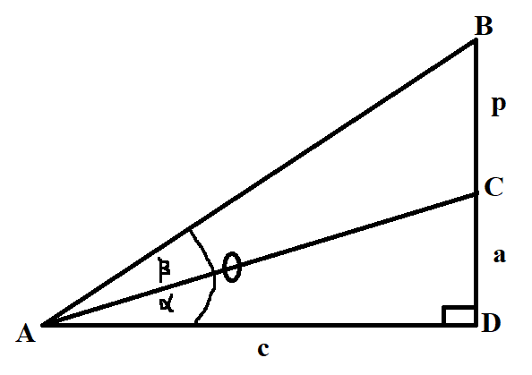
From the diagram:
$\triangle ACD$ and $\triangle ABD$ are right triangles
Considering $\triangle ACD$
Slope of Line Segment $\overline{AC} = \dfrac{a}{c}$
$\tan\alpha = \dfrac{a}{c}$
Considering $\triangle ABD$
Slope of Line Segment $\overline{AB} = \dfrac{p + a}{c}$
$\tan\theta = \dfrac{p + a}{c}$
So:
Given the slope of Line Segment $\overline{AC}$, we can determine the angle of slope, $\alpha$
Given the slope of Line Segment $\overline{AB}$, we can determine the angle of slope, $\theta$
However, how do we determine the angle, $\beta$ when given the slopes of both line segments?
This is where the Difference Formula is useful
$
\theta = \alpha + \beta \\[3ex]
\alpha + \beta = \theta \\[3ex]
\rightarrow \beta = \theta - \alpha \\[3ex]
\tan\beta = \tan(\theta - \alpha) \\[3ex]
\tan(\theta - \alpha) = \dfrac{\tan\theta - \tan\alpha}{1 + \tan\theta\tan\alpha} \\[5ex]
\therefore \tan\beta = \dfrac{\tan\theta - \tan\alpha}{1 + \tan\theta\tan\alpha} \\[5ex]
$
We know $\tan\alpha$
We know $\tan\theta$
We can find $\tan\beta$
We can find $\beta$
See Examples - Questions $47, 49, 51, 53$ among others:
Solved Examples on Angles and
Angular Conversions
The Sum and Difference Formulas written above can be summarized (written in compact form / shortened
form) as:
Sum and Difference Formulas
$
(1.)\;\; \sin (\alpha \pm \beta) = \sin \alpha \cos \beta \pm \cos \alpha \sin \beta \\[3ex]
(2.)\;\; \cos (\alpha \pm \beta) = \cos \alpha \cos \beta \mp \sin \alpha \sin \beta \\[3ex]
(3.)\;\; \tan (\alpha \pm \beta) = \dfrac{\tan \alpha \pm \tan \beta}{1 \mp \tan \alpha \tan \beta}
\\[5ex]
$
Ask students if this compact form / shortened form of writing the Sum and Difference Formulas is
better than writing
them separately.
What if the professor did not give them the formulas? They would have to memorize it. Memorizing the
formulas in
compact form is much easier. What do they think?
Half-Angle Formulas
$
(1.)\;\; \sin \dfrac{\theta}{2} = \pm \sqrt{\dfrac{1 - \cos \theta}{2}} \\[5ex]
(2.)\;\; \cos {\theta \over 2} = \pm \sqrt{\dfrac{1 + \cos \theta}{2}} \\[5ex]
(3.)\;\; \tan {\theta \over 2} = \pm \sqrt{\dfrac{1 - \cos \theta}{1 + \cos \theta}} \\[5ex]
(4.)\;\; \tan {\theta \over 2} = \dfrac{\sin \theta}{1 + \cos \theta} \\[5ex]
(5.)\;\; \tan {\theta \over 2} = \dfrac{1 - \cos \theta}{\sin \theta} \\[5ex]
$
Formulas from Half-Angle Formulas
$
(1.)\;\; \sin^2 \dfrac{\theta}{2} = \dfrac{1 - \cos \theta}{2} \\[5ex]
(2.)\;\; \cos^2 \dfrac{\theta}{2} = \dfrac{1 + \cos \theta}{2} \\[5ex]
(3.)\;\; \tan^2 \dfrac{\theta}{2} = \dfrac{1 - \cos \theta}{1 + \cos \theta} \\[7ex]
$
Double-Angle Formulas
$
(1.)\;\; \sin (2\theta) = 2 \sin \theta \cos \theta \\[3ex]
(2.)\;\; \cos (2\theta) = \cos^2 \theta - \sin^2 \theta \\[3ex]
(3.)\;\; \cos (2\theta) = 1 - 2\sin^2 \theta \\[3ex]
(4.)\;\; \cos (2\theta) = 2\cos^2 \theta - 1 \\[3ex]
$
Students may ask why there are three formulas for $\cos (2\theta)$
Ask them to derive the other two formulas from the first formula. They should use the Pythagorean
Identity.
Check their work by clicking the Trigonometric Proofs link
$
(5.)\;\; \tan (2\theta) = \dfrac{2\tan \theta}{1 - \tan^2 \theta} \\[5ex]
$
Formulas from Double-Angle Formulas
$
(1.)\;\; \sin^2 \theta = \dfrac{1 - \cos(2\theta)}{2} \\[5ex]
(2.)\;\; \cos^2 \theta = \dfrac{1 + \cos(2\theta)}{2} \\[5ex]
(3.)\;\; \tan^2 \theta = \dfrac{1 - \cos(2\theta)}{1 + \cos(2\theta)} \\[7ex]
$
Triple-Angle Formulas
$
(1.)\;\; \sin (3\theta) = 3 \sin \theta - 4\sin^3 \theta \\[3ex]
(2.)\;\; \cos (3\theta) = 4 \cos^3 \theta - 3 \cos \theta \\[3ex]
(3.)\;\; \tan (3\theta) = \dfrac{3\tan \theta - \tan^3 \theta}{1 - 3\tan^2 \theta} \\[7ex]
$
Sum-to-Product Formulas
$
(1.)\;\; \sin \alpha + \sin \beta = 2 \sin \left(\dfrac{\alpha + \beta}{2}\right) \cos
\left(\dfrac{\alpha - \beta}{2}\right) \\[5ex]
(2.)\;\; \sin \alpha - \sin \beta = 2 \sin \left(\dfrac{\alpha - \beta}{2}\right) \cos
\left(\dfrac{\alpha + \beta}{2}\right) \\[5ex]
(3.)\;\; \cos \alpha + \cos \beta = 2 \cos \left(\dfrac{\alpha + \beta}{2}\right) \cos
\left(\dfrac{\alpha - \beta}{2}\right) \\[5ex]
(4.)\;\; \cos \alpha - \cos \beta = -2 \sin \left(\dfrac{\alpha + \beta}{2}\right) \sin
\left(\dfrac{\alpha - \beta}{2}\right) \\[5ex]
$
Ask students to write the compact form / shortened form of the first two Sum-to-Product Formulas.
Sum-to-Product Formulas (Compact Form of the First Two Formulas)
$
(1.)\;\; \sin \alpha \pm \sin \beta = 2 \sin \dfrac{\alpha \pm \beta}{2} \cos \dfrac{\alpha \mp
\beta}{2} \\[7ex]
$
Product-to-Sum Formulas
$
(1.) \sin \alpha * \sin \beta = \dfrac{1}{2} [\cos(\alpha - \beta) - \cos(\alpha + \beta)] \\[5ex]
(2.) \cos \alpha * \cos \beta = \dfrac{1}{2} [\cos(\alpha - \beta) + \cos(\alpha + \beta)] \\[5ex]
(3.) \sin \alpha * \cos \beta = \dfrac{1}{2} [\sin(\alpha + \beta) + \sin(\alpha + \beta)] \\[5ex]
$
Factoring Formulas
$x$ can be any trigonometric ratio
$y$ can be any trigonometric ratio
Difference of Two Squares
$x^2 - y^2 = (x + y)(x - y)$
Difference of Two Cubes
$x^3 - y^3 = (x - y)(x^2 + xy - y^2)$
Sum of Two Cubes
$x^3 + y^3 = (x + y)(x^2 - xy + y^2)$
Trigonometric Equations
Trigonometric Equations are equations with at least a trigonometric function.
The solution of a trigonometric equation usually involves the determination of the angle that would
make both sides of the equation, the $LHS$(Left Hand Side) and the $RHS$(Right Hand Side) to be the
same.
As usual with Mr. C, for all equations; you have to check your solution(s), and you have to
check using the original (not modified) equation.
It is very important to check your solution because for some trigonometric equations, there is the
possibility of extraneous solutions/roots.
(1.) Ask students why it is important to check their solutions for all equations (not just
trigonometric equations).
(2.) Ask students why it is important to check their solution(s) with the original equation rather
than
the modified equation.
(3.) Ask students to define extraneous roots/solutions of an equation.
Trigonometric equations can be solved using any of three methods:
(1.) Algebraically: this is the solution of trigonometric equations using any of the
trigonometric
identities and formulas, and factoring formulas among others.
This is the most common method of solving trigonometric equations.
(2.) Graphically: this is the solution of trigonometric equations using a graph.
This method can be used when the angle to be determined is a special angle.
If the angle to be determined is not a special angle, please do not use only a graph to solve the
equation;
unless required otherwise.
(3.) Technologically: this is the solution of trigonometric equations using technology
Trigonometric equations usually have:
(1.) Specific solution(s) - this is the solution of the trigonometric equation where the angle
to be determined(that satisfies both sides of the equation) is within a specific interval.
For the intervals, please note the open interval, closed interval, half-open half-closed interval, and
the
half-closed half-open interval.
(2.) General solution(s) - this is the solution of the trigonometric equation where the angle
to be determined(that satisfies both sides of the equation) is without bounds.
General solutions are possible because of coterminal angles.
Ask students to define/explain coterminal angles.
To determine the general solution of a trigonometric equation:
(I.) Determine the specific solution(s)/angle(s) first
(II.) Write the angle(s) and the coterminal angle(s). For example: $\theta + 360k$ or $\theta + 2\pi k$
When solving trigonometric equations:
(1.) If the trigonometric equation has only one "linear" trigonometric function, isolate the
trigonometric function such that it is on the $LHS$. Then, find the inverse of that trigonometric
function
so you can get the angle.
For example: $\sin\theta = 1$
$\theta = \sin^{-1}(1) = 90^\circ = \dfrac{\pi}{2}$
Other examples are Questions $2$, $3$, $4$, and $6$ among others found in Solved Examples
on Trigonometric Equations
(2.) If the trigonometric equation has only one trigonometric function that is squared,
but is incomplete (missing the second term). Use the Square Root Property and solve it.
An example is Question $5$ among others found in Solved Examples
on Trigonometric Equations
(3.) If the trigonometric equation has only one trigonometric function that is squared,
but is incomplete (missing the third term), use appropriate substitution to make it easier, set it to be
equal to zero
(only $0$ should be on the $RHS$). Then, Factor by GCF, use the Zero Product Property and solve it. Do
not forget to substitute back.
An example is Question $12$ among others found in Solved Examples
on Trigonometric Equations
(4.) If the trigonometric equation has a complete quadratic trigonometric function (not missing any
terms),
use appropriate substitution to make it easier, Factor if applicable, and solve it. Do not forget to
substitute back.
An examples is Question $11$ among others found in Solved Examples
on Trigonometric Equations
(5.) Always consider the argument of the final trigonometric function whether it is a
straightforward
trigonometric equation or not a straightforward trigonometric equation.
Recall:
The Argument of a trigonometric function is the angle of the function or the angle for which
the function operates.
For example:
(a.) If you are asked to determine a solution in the interval $[0, 2\pi]$
for $\sin\theta = 1$; argument = $\theta$; consider all the angles that satisfy the trigonometric
equation in that interval $[0, 2\pi]$, $0$ and $2\pi$ included.
(b.) If you are asked to determine a solution in the interval $[0, 2\pi)$
for $\sin2\theta = 1$; argument = $2\theta$; consider all the angles that satisfy the trigonometric
equation in the interval $[0, 4\pi)$, $0$ included, $4\pi$ excluded.
Notice the $4\pi$ rather than $2\pi$. This is because of the argument.
The question asked for the interval, $[0, 2\pi)$ if the angle/argument was $\theta$
However, the argument is $2\theta$ so you have to multiply the interval by $2$
This interval becomes $[0, 4\pi)$
(c.) If you are asked to determine a solution in the interval $(0, 2\pi]$
for $\sin3\theta = 1$; argument = $3\theta$; consider all the angles that satisfy the trigonometric
equation in the interval $(0, 6\pi]$, $0$ excluded, $6\pi$ included.
Notice the $6\pi$ rather than $2\pi$. This is because of the argument.
The question asked for the interval, $(0, 2\pi]$ if the angle/argument was $\theta$
However, the argument is $2\theta$ so you have to multiply the interval by $3$
This interval becomes $(0, 6\pi]$
Student: I am confused.
What is the difference between a straightforward trigonometric equation and an "un-straightforward"
or "crooked" trigonometric equation? ☺☺☺
Teacher: Good question.
There are some trigonometric equations that has only one trigonometric function.
See questions $(2.)$ and $(3.)$ in Solved
Examples on Trigonometric Equations
We can solve those questions "directly" without having to do a lot of manipulations.
Those are straightforward questions.
Some other questions such as questions $(7.)$ and $(8.)$ contain more than one trigonometric
function.
Those questions require us to do some work - to use the trigonometric identities, trigonometric
formulas,
factoring formulas, etc. to solve them. For those ones, we may need to find the argument, then the
angle(s), then
the general solution(s).
(6.) So, whenever we are given a trigonometric equation with more than one trigonometric function, it is
not a straightforward question.
We may have to perform arithmetic operations, and use the trigonometric identities, trigonometric
formulas, factoring formulas, and factoring techniques as applicable to change it to an equation that
has only one
trigonometric function.
Let us do an example here.
We shall do more examples in the Solved Examples on Trigonometric Equations
We shall use the first two methods to solve this example.
Example 1. Determine all the solutions of $\sin\alpha + \cos\alpha = 0$ in the interval $[0,
2\pi]$
This is definitely not a straightforward question. It has two trigonometric functions - sine and
cosine functions
First Method: Graphical Method
Step 1: Draw a table of values for the relation:
$y = \sin\alpha + \cos\alpha$ for $0^\circ \le \alpha \le 2\pi$
| $\alpha$ | $0$ | $\dfrac{\pi}{6}$ | $\dfrac{\pi}{4}$ | $\dfrac{\pi}{3}$ | $\dfrac{\pi}{2}$ | $\dfrac{2\pi}{3}$ |
| $\sin\alpha$ | $0$ | $\dfrac{1}{2}$ | $\dfrac{\sqrt{2}}{2}$ | $\dfrac{\sqrt{3}}{2}$ | $1$ | $\dfrac{\sqrt{3}}{2}$ |
| $\cos\alpha$ | $1$ | $\dfrac{\sqrt{3}}{2}$ | $\dfrac{\sqrt{2}}{2}$ | $\dfrac{1}{2}$ | $0$ | $-\dfrac{1}{2}$ |
| $y$ |
$0 + 1$ $1$ |
$\dfrac{1}{2} + \dfrac{\sqrt{3}}{2}$ $\dfrac{1 + \sqrt{3}}{2}$ |
$\dfrac{\sqrt{2}}{2} + \dfrac{\sqrt{2}}{2}$ $\dfrac{\sqrt{2} + \sqrt{2}}{2}$ $\dfrac{2\sqrt{2}}{2}$ $\sqrt{2}$ |
$\dfrac{\sqrt{3}}{2} + \dfrac{1}{2}$ $\dfrac{\sqrt{3} + 1}{2}$ |
$1 + 0$ $1$ |
$\dfrac{\sqrt{3}}{2} + -\dfrac{1}{2}$ $\dfrac{\sqrt{3}}{2} - \dfrac{1}{2}$ $\dfrac{\sqrt{3} - 1}{2}$ |
| $\alpha$ | $\dfrac{3\pi}{4}$ | $\dfrac{5\pi}{6}$ | $\pi$ | $\dfrac{7\pi}{6}$ | $\dfrac{5\pi}{4}$ | $\dfrac{4\pi}{3}$ |
| $\sin\alpha$ | $\dfrac{\sqrt{2}}{2}$ | $\dfrac{1}{2}$ | $0$ | $-\dfrac{1}{2}$ | $-\dfrac{\sqrt{2}}{2}$ | $-\dfrac{\sqrt{3}}{2}$ |
| $\cos\alpha$ | $-\dfrac{\sqrt{2}}{2}$ | $-\dfrac{\sqrt{3}}{2}$ | $-1$ | $-\dfrac{\sqrt{3}}{2}$ | $-\dfrac{\sqrt{2}}{2}$ | $-\dfrac{1}{2}$ |
| $y$ |
$\dfrac{\sqrt{2}}{2} + -\dfrac{\sqrt{2}}{2}$ $\dfrac{\sqrt{2}}{2} - \dfrac{\sqrt{2}}{2}$ $0$ |
$\dfrac{1}{2} + -\dfrac{\sqrt{3}}{2}$ $\dfrac{1}{2} - \dfrac{\sqrt{3}}{2}$ $\dfrac{1 - \sqrt{3}}{2}$ |
$0 + -1$ $0 - 1$ $-1$ |
$-\dfrac{1}{2} + -\dfrac{\sqrt{3}}{2}$ $-\dfrac{1}{2} - \dfrac{\sqrt{3}}{2}$ $\dfrac{-1 - \sqrt{3}}{2}$ |
$-\dfrac{\sqrt{2}}{2} + -\dfrac{\sqrt{2}}{2}$ $-\dfrac{\sqrt{2}}{2} - \dfrac{\sqrt{2}}{2}$ $\dfrac{-\sqrt{2} - \sqrt{2}}{2}$ $-\dfrac{2\sqrt{2}}{2}$ $-\sqrt{2}$ |
$-\dfrac{\sqrt{3}}{2} + -\dfrac{1}{2}$ $-\dfrac{\sqrt{3}}{2} - \dfrac{1}{2}$ $\dfrac{-\sqrt{3} - 1}{2}$ |
| $\alpha$ | $\dfrac{3\pi}{2}$ | $\dfrac{7\pi}{4}$ | $\dfrac{5\pi}{3}$ | $\dfrac{11\pi}{6}$ | $2\pi$ |
| $\sin\alpha$ | $-1$ | $-\dfrac{\sqrt{2}}{2}$ | $-\dfrac{\sqrt{3}}{2}$ | $-\dfrac{1}{2}$ | $0$ |
| $\cos\alpha$ | $0$ | $\dfrac{\sqrt{2}}{2}$ | $\dfrac{1}{2}$ | $\dfrac{\sqrt{3}}{2}$ | $1$ |
| $y$ |
$-1 + 0$ $-1$ |
$-\dfrac{\sqrt{2}}{2} +\dfrac{\sqrt{2}}{2}$ $0$ |
$-\dfrac{\sqrt{3}}{2} + \dfrac{1}{2}$ $\dfrac{-\sqrt{3} + 1}{2}$ |
$-\dfrac{1}{2} + \dfrac{\sqrt{3}}{2}$ $\dfrac{-1 + \sqrt{3}}{2}$ |
$0 + 1$ $1$ |
Step 2: Draw the graph of $y = \sin\alpha + \cos\alpha$ for $0^\circ \le \alpha \le 2\pi$
However, there is no need to draw the graph.
Our answers are clear from the Table of Values.
From the table; $y = 0$ when $\alpha = \dfrac{3\pi}{4}, \dfrac{7\pi}{4}$
Second Method: Algebraic Method
This equation is not straightforward. It has two trigonometric functions - the sine function and the
cosine function.
What do we do to change it to have only one function?
$
\sin\alpha + \cos\alpha = 0 \\[3ex]
Square\:\: both\:\: sides \\[3ex]
(\sin\alpha + \cos\alpha)^2 = 0^2 \\[3ex]
(\sin\alpha + \cos\alpha)(\sin\alpha + \cos\alpha) = 0 \\[3ex]
\sin^2\alpha + \sin\alpha\cos\alpha + \sin\alpha\cos\alpha + \cos^2\alpha = 0 \\[3ex]
\sin^2\alpha + \cos^2\alpha + 2\sin\alpha\cos\alpha = 0 \\[3ex]
\sin^2\alpha + \cos^2\alpha = 1 ... Pythagorean\:\: Identity \\[3ex]
1 + 2\sin\alpha\cos\alpha = 0 \\[3ex]
2\sin\alpha\cos\alpha = -1 \\[3ex]
2\sin\alpha\cos\alpha = \sin2\alpha ... Double\:\: Angle\:\: Formula \\[3ex]
\sin2\alpha = -1 \\[3ex]
Argument = 2\alpha \\[3ex]
\therefore interval = [0, 4\pi] \\[3ex]
2\alpha = \sin^{-1}(-1) \\[3ex]
\sin^{-1}(-1) = 270^\circ ... Unit\:\: Circle\:\: Trig \\[5ex]
Also,\:\: based\:\: on\:\: [0, 4\pi] = [0, 4 * 180^\circ] = [0, 720^\circ] \\[3ex]
\sin^{-1}(-1) = 270 + 360(1) ...coterminal\;\; \angle s \\[3ex]
\sin^{-1}(-1) = 270 + 360 \\[3ex]
\sin^{-1}(-1) = 630^\circ \\[3ex]
\therefore 2\alpha = 270, \:\:2\alpha = 630 \\[3ex]
\alpha = \dfrac{270}{2}, \:\:\alpha = \dfrac{630}{2} \\[5ex]
\alpha = 135^\circ, 315^\circ \\[3ex]
135^\circ = 135 * \dfrac{\pi}{180} = \dfrac{3\pi}{4} \\[5ex]
315^\circ = 315 * \dfrac{\pi}{180} = \dfrac{7\pi}{4} \\[5ex]
\alpha = \dfrac{3\pi}{4}, \dfrac{7\pi}{4}
$
Check
|
$
\underline{LHS} \\[3ex]
\sin\alpha + \cos\alpha \\[3ex]
\alpha = \dfrac{3\pi}{4} \\[5ex]
\sin\alpha = \sin\dfrac{3\pi}{4} = \dfrac{\sqrt{2}}{2} \\[5ex]
\cos\alpha = \cos\dfrac{3\pi}{4} = -\dfrac{\sqrt{2}}{2} \\[5ex]
= \dfrac{\sqrt{2}}{2} + -\dfrac{\sqrt{2}}{2} \\[5ex]
= \dfrac{\sqrt{2}}{2} - \dfrac{\sqrt{2}}{2} \\[5ex]
= 0 \\[3ex]
$
$ \alpha = \dfrac{7\pi}{4} \\[5ex] \sin\alpha = \sin\dfrac{7\pi}{4} = -\dfrac{\sqrt{2}}{2} \\[5ex] \cos\alpha = \cos\dfrac{3\pi}{4} = \dfrac{\sqrt{2}}{2} \\[5ex] = -\dfrac{\sqrt{2}}{2} + \dfrac{\sqrt{2}}{2} \\[5ex] = 0 $ |
$ \underline{RHS} \\[3ex] 0 $ |
$
\underline{General\:\: solutions} \\[3ex]
\alpha = \dfrac{3\pi}{4} + 2\pi k ...coterminal\:\: \angle s \\[5ex]
\alpha = \dfrac{7\pi}{4} + 2\pi k ...coterminal\:\: \angle s \\[5ex]
$
Which method do you prefer? ☺☺☺
Which method is faster?
If our solution (the angles) were not special angles, do you see why the Graphical method is not
recommended?
Trigonometric Functions and Graphs
The General Equation of a Trigonometric Function (First Form) is:
$
f(x) = A \:\:\boldsymbol{function}\:\: [B(x \pm C)] \pm D \\[3ex]
where \\[3ex]
A = Amplitude \\[3ex]
function = sin,\:\: cos,\:\: tan,\:\: csc,\:\: sec,\:\: cot \\[3ex]
\omega = Period \\[3ex]
For \:\:sin,\:\: cos,\:\: csc,\:\: sec \\[3ex]
\omega = \dfrac{2\pi}{|B|} \\[5ex]
For \:\:tan,\:\: cot \\[3ex]
\omega = \dfrac{\pi}{|B|} \\[5ex]
B = multiplier\:\: that\:\: affects\:\: the\:\: period \\[3ex]
C = Phase\:\: Shift (Horizontal\:\: Shift) \\[3ex]
D = Vertical\:\: Shift \\[3ex]
F = Frequency \\[3ex]
F = \dfrac{1}{\omega} \\[3ex]
\omega = \dfrac{1}{F} \\[7ex]
$
The General Equation of a Trigonometric Function (Second Form) is:
$
f(x) = A \:\:\boldsymbol{function}\:\: (Bx \pm C) \pm D \\[3ex]
where \\[3ex]
A = Amplitude \\[3ex]
function = sin,\:\: cos,\:\: tan,\:\: csc,\:\: sec,\:\: cot \\[3ex]
\omega = Period \\[3ex]
For \:\:sin,\:\: cos,\:\: csc,\:\: sec \\[3ex]
\omega = \dfrac{2\pi}{|B|} \\[5ex]
For \:\:tan,\:\: cot \\[3ex]
\omega = \dfrac{\pi}{|B|} \\[5ex]
B = multiplier\:\: that\:\: affects\:\: the\:\: period \\[3ex]
\dfrac{C}{B} = Phase\:\: Shift (Horizontal\:\: Shift) \\[3ex]
D = Vertical\:\: Shift \\[3ex]
F = Frequency \\[3ex]
F = \dfrac{1}{\omega} \\[3ex]
\omega = \dfrac{1}{F} \\[7ex]
$
Ask students to compare and contrast the two forms of the general equations of a
trigonometric function.
A Sinusoidal Function is a function that has the form of a wave that repeats indefinitely.
The sinusoidal function repeats in both positive and negative directions. This means that it is
periodic.
The sinusoidal function has highs and lows OR maxima and minima OR
crests and troughs OR mountains and valleys
The sine function and the cosine function are the only sinusoidal trigonometric
functions.
The Amplitude of a sinusoidal function is the height/distance from the maximum value of the
sinusoidal
function to the horizontal axis($x-axis$).
OR
The Amplitude of a sinusoidal function is the height/distance from the minimum value of the
sinusoidal
function to the horizontal axis($x-axis$).
OR
The Amplitude of a sinusoidal function is one-half the difference between the maximum value and
the minimum value of the sinusoidal function.
Only the sinusoidal functions (sine and cosine functions) have amplitudes.
The other trigonometric functions (tangent, cosecant, secant, and cotangent functions) do not have
amplitudes. However, the
values that "represent their amplitudes" will affect their steepness.
A negative value of the Amplitude is the same as the Vertical Reflection (Reflection across
the $x-axis$)
in the Algebra Transformation of
Functions
The Period of a trigonometric function is the length of one cycle of the function (the length
before it begins to repeat).
OR
The Period of a sinusoidal function is the distance between successive crests of the function.
OR
The Period of a sinusoidal function is the distance between successive troughs of the function.
The sine, cosine, cosecant, and secant functions have a period of $\boldsymbol{2\pi}$
The tangent and cotangent functions have a period of $\boldsymbol{\pi}$
Student: Why is that? (Speaking like an American lol)
Teacher: Well, let's do an example so you see.
The Frequency of a trigonometric function is the number of times of occurrence or repetitions per
unit time.
It is the reciprocal of the period.
Notable Notes for Determining the Parameters of Trigonometric Functions
(1.) Depending on the question, you may use either form.
Also, you may convert from one form to another if you wish.
(2.) Write each question in any of the forms first, then compare, and determine the
parameters.
Exercise:
Explain the different properties of the six trigonometric functions using this
interactive software from NCTM
(National Council of Teachers of Mathematics)
Bearings and Distances
Notable Notes on Bearings and Distances
Prior Knowledge: Connect to Geography: Remember the four cardinal points: North, N; South,
S;
East, E; and West, W
NE means North towards East
NW means North towards West
SE means South towards East
SW means South towards West
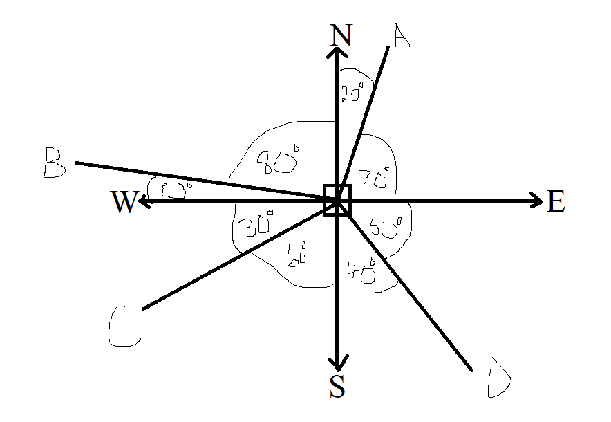
(1.) Cardinal Points:
North: N
South: S
East: E
West: W
(2.) Points:
A
B
C
D
(3.) Bearings of Points:
The conventional representation of a bearing is to measure it from the vertical
axis (North or South)
towards the horizontal axis (East or West)
Point A:
Point A is on a bearing of $N\;20^\circ\;E$ or $20^\circ\;E\;\;of\;\;N$ (Conventional representation)
OR
Point A is on a bearing of $E\;70^\circ\;N$ or $70^\circ\;N\;\;of\;\;E$
Point B:
Point B is on a bearing of $N\;80^\circ\;W$ or $80^\circ\;W\;\;of\;\;N$ (Conventional representation)
OR
Point B is on a bearing of $W\;10^\circ\;N$ or $10^\circ\;N\;\;of\;\;W$
Point C:
Point C is on a bearing of $S\;60^\circ\;W$ or $60^\circ\;W\;\;of\;\;S$. (Conventional representation)
OR
Point C is on a bearing of $W\;30^\circ\;S$ or $30^\circ\;S\;\;of\;\;W$
Point D:
Point D is on a bearing of $S\;40^\circ\;E$ or $40^\circ\;E\;\;of\;\;S$ (Conventional representation)
OR
Point D is on a bearing of $E\;50^\circ\;S$ or $50^\circ\;S\;\;of\;\;E$
(4.) Bearing of a Point from another Point:
This is the clockwise direction from the line of a point to the line of the other point.
Bearing of Point A from Point B
From Point B, draw an angle in a clockwise direction till it touches the line of Point A
This is $80 + 20 = 100^\circ$
Bearing of Point A from Point C
From Point C, draw an angle in a clockwise direction till it touches the line of Point A
This is $30 + 10 + 80 + 20 = 140^\circ$
Bearing of Point A from Point D
From Point D, draw an angle in a clockwise direction till it touches the line of Point A
This is $40 + 60 + 30 + 10 + 80 + 20 = 240^\circ$
Bearing of Point B from Point A
From Point A, draw an angle in a clockwise direction till it touches the line of Point B
This is $70 + 50 + 40 + 60 + 30 + 10 = 260^\circ$
Bearing of Point B from Point C
From Point C, draw an angle in a clockwise direction till it touches the line of Point B
This is $30 + 10 = 40^\circ$
Bearing of Point B from Point D
From Point D, draw an angle in a clockwise direction till it touches the line of Point B
This is $40 + 60 + 30 + 10 = 140^\circ$
Bearing of Point C from Point A
From Point A, draw an angle in a clockwise direction till it touches the line of Point C
This is $70 + 50 + 40 + 60 = 220^\circ$
Bearing of Point C from Point B
From Point B, draw an angle in a clockwise direction till it touches the line of Point C
This is $80 + 20 + 70 + 50 + 40 + 60 = 320^\circ$
Bearing of Point C from Point D
From Point D, draw an angle in a clockwise direction till it touches the line of Point C
This is $40 + 60 = 100^\circ$
Bearing of Point D from Point A
From Point A, draw an angle in a clockwise direction till it touches the line of Point D
This is $70 + 50 = 120^\circ$
Bearing of Point D from Point B
From Point B, draw an angle in a clockwise direction till it touches the line of Point D
This is $80 + 20 + 70 + 50 = 220^\circ$
Bearing of Point D from Point C
From Point A, draw an angle in a clockwise direction till it touches the line of Point D
This is $30 + 10 + 80 + 20 + 70 + 50 = 260^\circ$
(5.) Due or Directly
This is the straight line
Due North means Directly North: It is the straight line North
Due East means Directly East: It is the straight line East
Due North means Directly South: It is the straight line South
Due North means Directly West: It is the straight line West
(6.) Half-cardinal points
This represents half the angle between the vertical axis (North or South) and the horizontal axis (East
or West)
$
NE = N\;45^\circ\;E \\[3ex]
NW = N\;45^\circ\;W \\[3ex]
SE = S\;45^\circ\;E \\[3ex]
SW = S\;45^\circ\;W \\[3ex]
$
(7.) True Bearing
The true bearing of a point is the angle measured in degrees from the North
cardinal point in a
clockwise direction to the line of the point.
NOTE: If the cardinal points of the bearing of a point is not given, the true bearing
should be used.
For example: the true bearing or the bearing of:
$
A\;\;is\;\; 20^\circ \\[3ex]
B\;\;is\;\; 280^\circ\;\;(90 + 90 + 90 + 10) \\[3ex]
C\;\;is\;\; 240^\circ \;\;(90 + 90 + 60) \\[3ex]
D\;\;is\;\; 120^\circ \;\;(70 + 50) \\[3ex]
$
what is the bearing of Point A from Point B?
This is a common question that is often evaluated in several admission exams.
Ask students to verify the notes using their own diagrams and arbitrary angles.
(a.) If the bearing of Point B from Point A is $\theta$ such that: $0 \le \theta \lt 180^\circ$,
Then the bearing of Point A from Point B is: $\theta + 180$
(b.) If the bearing of Point B from Point A is $\theta$ such that: $180 \le \theta \le 360^\circ$,
Then the bearing of Point A from Point B is: $\theta - 180$
Example:
curriculum.gov.mt What is the bearing of Q from P?

As seen from the diagram, the bearing of P from Q is $325^\circ$
The question then asks us to find the bearing of Q from P

$ k = k ...alternate \;\;\angle s\;\;are\;\;equal \\[3ex] k + 180 + 90 = 325 ...diagram \\[3ex] k + 270 = 325 \\[3ex] k = 325 - 270 \\[3ex] k = 55^\circ \\[3ex] Bearing\;\;of\;\;Q\;\;from\;\;P \\[3ex] = 90 + k \\[3ex] = 90 + 55 \\[3ex] = 145^\circ \\[3ex] $ OR
For those who are good at memorization (not recommended even though it works)
If the bearing of Point B from Point A is $\theta$ such that: $180 \le \theta \le 360^\circ$,
Then the bearing of Point A from Point B is: $\theta - 180$
$ \theta = 325^\circ \\[3ex] 180 \le \theta \le 360^\circ \\[3ex] Bearing\;\;of\;\;Q\;\;from\;\;P \\[3ex] = 325 - 180 \\[3ex] = 145^\circ $
(9.) Bearing of a Point expressed as a Compass Bearing
Ask students to verify the notes using their own diagrams and arbitrary angles.
(a.) For a bearing of $\theta$ such that: $0 \lt \theta \lt 90^\circ$,
the compass bearing is: $N\; \theta \;E$
(b.) For a bearing of $\theta$ such that: $90 \lt \theta \lt 180^\circ$,
the compass bearing is: $S\; (180 - \theta) \;E$
(c.) For a bearing of $\theta$ such that: $180 \lt \theta \lt 270^\circ$,
the compass bearing is: $S\; (\theta - 180) \;W$
(d.) For a bearing of $\theta$ such that: $270 \lt \theta \lt 360^\circ$,
the compass bearing is: $N\; (360 - \theta) \;W$
Example:
WASSCE A bearing of 320° expressed as a compass bearing is
$ A.\;\; N\;50^\circ\;W \\[3ex] B.\;\; N\;40^\circ\;W \\[3ex] C.\;\; N\;50^\circ\;E \\[3ex] D.\;\; N\;40^\circ\;E \\[5ex] $

$ 320 + \phi = 360 ...\angle s\;\;at\;\;a\;\;point \\[3ex] \phi = 360 - 320 \\[3ex] \phi = 40^\circ \\[3ex] Compass\;\;Bearing = N\;40^\circ\;W $
(10.) Bearing of a Point from another Point expressed as a Compass Bearing: Part 1
Ask students to verify the notes using their own diagrams and arbitrary angles.
(a.) If the bearing of Point B from Point A is $\theta$ such that: $0 \lt \theta \lt 90^\circ$,
Then the compass bearing of Point A from Point B is: $S\; \theta \;W$
(b.) If the bearing of Point B from Point A is $\theta$ such that: $90 \lt \theta \lt 180^\circ$,
Then the compass bearing of Point A from Point B is: $N\; (180 - \theta) \;W$
(c.) If the bearing of Point B from Point A is $\theta$ such that: $180 \lt \theta \lt 270^\circ$,
Then the compass bearing of Point A from Point B is: $N\; (\theta - 180) \;E$
(d.) If the bearing of Point B from Point A is $\theta$ such that: $270 \lt \theta \lt 360^\circ$,
Then the compass bearing of Point A from Point B is: $S\; (360 - \theta) \;E$
Example:
JAMB The bearing of a bird on a tree from a hunter on the ground is $N\;72^\circ\;E$
What is the bearing of the hunter from the bird?
$ A.\;\; S\;18^\circ\;W \\[3ex] B.\;\; S\;72^\circ\;W \\[3ex] C.\;\; S\;72^\circ\;E \\[3ex] D.\;\; S\;27^\circ\;E \\[3ex] E.\;\; S\;27^\circ\;W \\[3ex] $

$ \theta = 72^\circ...alternate\;\;\angle s\;\;are\;\;equal \\[3ex] Bearing\;\;of\;\;the\;\;hunter\;\;from\;\;the\;\;bird \\[3ex] = 180 + \theta \\[3ex] = 180 + 72 \\[3ex] = 252^\circ \\[3ex] OR \\[3ex] Compass\;\;Bearing\;\;of\;\;the\;\;hunter\;\;from\;\;the\;\;bird \\[3ex] = S\;\theta\;W \\[3ex] = S\;72^\circ\;W \\[3ex] $
Student: Mr. C, what if the bearing of the bird from the hunter is $N\;72^\circ\;W$
and we are asked to find the compass bearing of the hunter from the bird?
If I do not want to draw the diagram, are there any notes for such?
Teacher: Very good question.
Drawing the diagram is the recommended option though.
You do know that $72^\circ$ is the same as $N\;72^\circ\;E$...right?
Student: Yes Sir...
because we take the bearing in a clockwise direction.
Teacher: That is correct.
So, what would be the bearing angle equivalent to $N\;72^\circ\;W$?
Student:
$ N\;72^\circ\;W = 360 - 72 = 288^\circ \\[3ex] $ Teacher: That is right. So, we can use the notes for the angle of $288^\circ$
If the bearing of Point B from Point A is $\theta$ such that: $270 \lt \theta \lt 360^\circ$,
Then the compass bearing of Point A from Point B is: $S\; (360 - \theta) \;E$
Student:
$ \theta = 288^\circ \\[3ex] 360 - 288 = 72^\circ \\[3ex] $ So, the answer is $S\;72^\circ\;E$?
Teacher: That is correct.
If you draw it, you will get the same answer.
Student: Can you show the diagram, Sir?
Teacher: Sure, here it is.
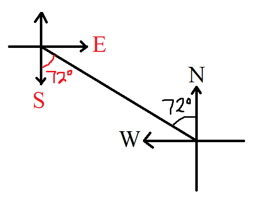
Student: Thank you for the diagram, Mr. C
But, are there notes for it?
Teacher: Yes, we can write the notes for it.
Begin to write it and I shall guide you.
Let us call the first part: Part 1
Then, let us write Part 2
Bearing of a Point from another Point expressed as a Compass Bearing: Part 2
Ask students to verify the notes using their own diagrams and arbitrary angles.
(a.) If the bearing of Point B from Point A is $N\;\theta\;E$,
Then the compass bearing of Point A from Point B is: $S\; \theta \;W$
(b.) If the bearing of Point B from Point A is $S\;\theta\;E$,
Then the compass bearing of Point A from Point B is: $N\;\theta\;W$
(c.) If the bearing of Point B from Point A is $S\;\theta\;W$,
Then the compass bearing of Point A from Point B is: $N\;\theta\;E$
(d.) If the bearing of Point B from Point A is $N\;\theta\;W$,
Then the compass bearing of Point A from Point B is: $S\;\theta\;E$
References
Chukwuemeka, S.D (2016, April 30). Samuel Chukwuemeka Tutorials - Math, Science, and Technology.
Retrieved from https://www.samuelchukwuemeka.com
Bittinger, M. L., Beecher, J. A., Ellenbogen, D. J., & Penna, J. A. (2017). Algebra and Trigonometry:
Graphs and Models (6th ed.).
Boston: Pearson.
Martin-Gay, E. (2016). Geometry (1st ed.).
London, England: Pearson.
Sullivan, M., & Sullivan, M. (2017). Algebra & Trigonometry (7th ed.).
Boston: Pearson.
Alpha Widgets Overview Tour Gallery Sign In. (n.d.). Retrieved from http://www.wolframalpha.com/widgets/
Authority (NZQA), (n.d.). Mathematics and Statistics subject resources. www.nzqa.govt.nz. Retrieved
December 14,
2020, from https://www.nzqa.govt.nz/ncea/subjects/mathematics/levels/
CrackACT. (n.d.). Retrieved from http://www.crackact.com/act-downloads/
CMAT Question Papers CMAT Previous Year Question Bank - Careerindia. (n.d.).
https://www.careerindia.com. Retrieved
May 30, 2020, from https://www.careerindia.com/entrance-exam/cmat-question-papers-e23.html
CSEC Math Tutor. (n.d). Retrieved from https://www.csecmathtutor.com/past-papers.html
Desmos. (n.d.). Desmos Graphing Calculator. https://www.desmos.com/calculator
DLAP Website. (n.d.). Curriculum.gov.mt.
https://curriculum.gov.mt/en/Examination-Papers/Pages/list_secondary_papers.aspx
Free Jamb Past Questions And Answer For All Subject 2020. (2020, January 31). Vastlearners.
https://www.vastlearners.com/free-jamb-past-questions/
Geogebra. (2019). Graphing Calculator - GeoGebra. Geogebra.org.
https://www.geogebra.org/graphing?lang=en
GCSE Exam Past Papers: Revision World. Retrieved April 6, 2020, from
https://revisionworld.com/gcse-revision/gcse-exam-past-papers
HSC exam papers | NSW Education Standards. (2019). Nsw.edu.au.
https://educationstandards.nsw.edu.au/wps/portal/nesa/11-12/resources/hsc-exam-papers
JAMB Past Questions, WAEC, NECO, Post UTME Past Questions. (n.d.). Nigerian Scholars. Retrieved February
12, 2022,
from https://nigerianscholars.com/past-questions/
KCSE Past Papers by Subject with Answers-Marking Schemes. (n.d.). ATIKA SCHOOL.
Retrieved June 16, 2022, from https://www.atikaschool.org/kcsepastpapersbysubject
Myschool e-Learning Centre - It's Time to Study! - Myschool. (n.d.). https://myschool.ng/classroom
Netrimedia. (2022, May 2). ICSE 10th Board Exam Previous Papers- Last 10 Years. Education Observer.
https://www.educationobserver.com/icse-class10-previous-papers/
NSC Examinations. (n.d.). www.education.gov.za.
https://www.education.gov.za/Curriculum/NationalSeniorCertificate(NSC)Examinations.aspx
OpenStax. (2019). Openstax.org. https://openstax.org/details/books/algebra-and-trigonometry
Papua New Guinea: Department of Education. (n.d.). www.education.gov.pg.
https://www.education.gov.pg/TISER/exams.html
School Curriculum and Standards Authority (SCSA): K-12. Past ATAR Course Examinations. Retrieved
December 10, 2020, from https://senior-secondary.scsa.wa.edu.au/further-resources/past-atar-course-exams
West African Examinations Council (WAEC). Retrieved May 30, 2020, from
https://waeconline.org.ng/e-learning/Mathematics/mathsmain.html
51 Real SAT PDFs and List of 89 Real ACTs (Free) : McElroy Tutoring. (n.d.).
Mcelroytutoring.com. Retrieved December 12, 2022,
from
https://mcelroytutoring.com/lower.php?url=44-official-sat-pdfs-and-82-official-act-pdf-practice-tests-free